[Toàn Chương] LM11 — Learning Module 11 Yield-Based Bond Duration Measures and Properties
Volume 6: Fixed Income
Learning Module 11 Yield-Based Bond Duration Measures and Properties
Part 1/2: Introduction (PDF Pages 277–290)
Tập 6: Thu nhập Cố định (Fixed Income)
Học phần 11: Các Thước đo và Đặc tính Thời lượng Trái phiếu Dựa trên Lợi suất (Yield-Based Bond Duration Measures and Properties)
Phần 1/2: Giới thiệu (Trang PDF 277–290)
L E A R N I N G M O D U L E 11
H Ọ C P H Ầ N 11
Yield-Based Bond Duration Measures and Properties
Các Thước đo và Đặc tính Thời lượng Trái phiếu Dựa trên Lợi suất (Yield-Based Bond Duration Measures and Properties)
LEARNING OUTCOMES
MỤC TIÊU HỌC TẬP (LEARNING OUTCOMES)
Mastery The candidate should be able to:
Làm chủ kiến thức – Ứng viên cần có khả năng:
define, calculate, and interpret modified duration, money duration, and the price value of a basis point (PVBP) explain how a bond’s maturity, coupon, and yield level affect its interest rate risk
- định nghĩa, tính toán và diễn giải thời lượng điều chỉnh (modified duration), thời lượng tiền tệ (money duration), và giá trị giá của một điểm cơ bản (price value of a basis point – PVBP)
- giải thích cách thức kỳ hạn (maturity), lãi suất coupon (coupon) và mức lợi suất (yield level) của trái phiếu ảnh hưởng đến rủi ro lãi suất (interest rate risk) của nó
INTRODUCTION
GIỚI THIỆU (INTRODUCTION)
1
1
Prior lessons explored two sources of interest rate risk—reinvestment risk and price risk—and demonstrated how holding a bond for its Macaulay duration balances them. This lesson and those that follow extend that discussion by introducing measures of price risk. Two broad categories of such measures exist: those that assume underlying bond cash flows are certain and measure price sensitivity to changes in a bond’s own yield , which are covered in these lessons, and those that introduce the possibility of a bond default and that measure price sensitivity to changes in a benchmark yield curve, which are covered in later lessons. This lesson will illustrate how the interest rate risk of a bond is a function of its features, including its time-to-maturity, coupon rate, and yield.
Các bài học trước đã khám phá hai nguồn rủi ro lãi suất—rủi ro tái đầu tư (reinvestment risk) và rủi ro giá (price risk)—đồng thời chứng minh việc nắm giữ trái phiếu trong khoảng thời gian bằng thời lượng Macaulay (Macaulay duration) giúp cân bằng hai rủi ro này như thế nào. Bài học này và các bài học tiếp theo mở rộng cuộc thảo luận đó bằng cách giới thiệu các thước đo rủi ro giá. Có hai nhóm thước đo rộng như vậy: những thước đo giả định dòng tiền cơ sở của trái phiếu là chắc chắn và đo lường độ nhạy của giá đối với những thay đổi trong lợi suất của chính trái phiếu đó (own yield), được trình bày trong các bài học này, và những thước đo đưa vào khả năng vỡ nợ của trái phiếu và đo lường độ nhạy của giá đối với những thay đổi trong đường cong lợi suất chuẩn (benchmark yield curve), được trình bày trong các bài học sau. Bài học này sẽ minh họa cách rủi ro lãi suất của một trái phiếu là một hàm số phụ thuộc vào các đặc điểm của nó, bao gồm thời gian đáo hạn (time-to-maturity), lãi suất coupon (coupon rate) và lợi suất (yield).
Most of the examples and exhibits used throughout the reading can be downloaded as a Microsoft Excel workbook. Each worksheet in the workbook is labeled with the corresponding example or exhibit number in the text.
Hầu hết các ví dụ và bảng biểu được sử dụng xuyên suốt bài đọc có thể được tải xuống dưới dạng sổ làm việc Microsoft Excel. Mỗi trang tính trong sổ làm việc được gắn nhãn với số ví dụ hoặc bảng biểu tương ứng trong văn bản.
LEARNING MODULE OVERVIEW
TỔNG QUAN HỌC PHẦN (LEARNING MODULE OVERVIEW)
- Duration is a quantitative measure of interest rate risk. There are several duration measures, including those that measure a bond’s price sensitivity to changes in its own yield-to-maturity and assume underlying cash flows are certain (yield duration) and those that measure changes in a benchmark yield curve, with less certain underlying cash flows (curve duration).
- Thời lượng (Duration) là một thước đo định lượng về rủi ro lãi suất (interest rate risk). Có một số thước đo thời lượng, bao gồm những thước đo đo lường độ nhạy giá của trái phiếu đối với những thay đổi trong chính lợi suất đáo hạn của nó và giả định dòng tiền cơ sở là chắc chắn (thời lượng lợi suất – yield duration) và những thước đo đo lường những thay đổi trong đường cong lợi suất chuẩn, với dòng tiền cơ sở ít chắc chắn hơn (thời lượng đường cong – curve duration).
-
Macaulay duration, modified duration, money duration, and the price value of a basis point (PVBP) are yield duration measures.
-
Modified duration is the slope or first derivative of the price of a bond with respect to its yield-to-maturity, measuring the sensitivity of a bond’s price to changes in its yield-to-maturity. Modified duration can be calculated using a bond’s Macaulay duration and yield or through approximation.
-
Money duration is an extension of modified duration and incorporates the size of the bond position in currency terms. Related to this measure is the price value of a basis point, which is an estimate of the change in the price of a bond for a 1 bp change in the bond’s yield.
-
Duration can be used to estimate the change in the price of a bond in response to a change in yield, but it assumes a linear relationship between price and yield even though, in fact, the relationship is nonlinear. This is most evident when estimating price changes for large changes in yield and for bonds with certain features.
-
A bond’s features, including its time-to-maturity, coupon rate, and yield-to-maturity, determine its duration. Duration, for a given bond, is not static and decreases as the bond approaches maturity.
-
All else equal, a longer (shorter) time-to-maturity, a lower (higher) coupon rate, or a lower (higher) yield-to-maturity results in higher (lower) duration or higher (lower) interest rate risk.
-
Thời lượng Macaulay (Macaulay duration), thời lượng điều chỉnh (modified duration), thời lượng tiền tệ (money duration), và giá trị giá của một điểm cơ bản (price value of a basis point – PVBP) là các thước đo thời lượng lợi suất (yield duration measures).
-
Thời lượng điều chỉnh (Modified duration) là độ dốc (slope) hay đạo hàm bậc nhất (first derivative) của giá trái phiếu theo lợi suất đáo hạn (yield-to-maturity), đo lường độ nhạy của giá trái phiếu đối với những thay đổi trong lợi suất đáo hạn của nó. Thời lượng điều chỉnh có thể được tính bằng cách sử dụng thời lượng Macaulay và lợi suất của trái phiếu hoặc thông qua phương pháp xấp xỉ (approximation).
-
Thời lượng tiền tệ (Money duration) là sự mở rộng của thời lượng điều chỉnh và kết hợp quy mô của vị thế trái phiếu tính theo đơn vị tiền tệ. Liên quan đến thước đo này là giá trị giá của một điểm cơ bản (price value of a basis point – PVBP), là ước tính mức thay đổi trong giá của một trái phiếu khi lợi suất của trái phiếu thay đổi 1 điểm cơ bản (1 bp).
-
Thời lượng có thể được sử dụng để ước tính mức thay đổi trong giá của một trái phiếu trước một sự thay đổi trong lợi suất, nhưng nó giả định mối quan hệ tuyến tính (linear relationship) giữa giá và lợi suất mặc dù trên thực tế, mối quan hệ này là phi tuyến tính (nonlinear). Điều này thể hiện rõ nhất khi ước tính những thay đổi về giá cho những biến động lớn về lợi suất và đối với những trái phiếu có các đặc tính nhất định.
-
Các đặc điểm của trái phiếu, bao gồm thời gian đáo hạn (time-to-maturity), lãi suất coupon (coupon rate), và lợi suất đáo hạn (yield-to-maturity), quyết định thời lượng của nó. Thời lượng đối với một trái phiếu nhất định không phải là tĩnh mà giảm dần khi trái phiếu tiến gần đến ngày đáo hạn.
-
Khi các yếu tố khác không đổi (all else equal), thời gian đáo hạn dài hơn (ngắn hơn), lãi suất coupon thấp hơn (cao hơn), hoặc lợi suất đáo hạn thấp hơn (cao hơn) sẽ dẫn đến thời lượng cao hơn (thấp hơn) hoặc rủi ro lãi suất cao hơn (thấp hơn).
LEARNING MODULE SELF-ASSESSMENT
TỰ ĐÁNH GIÁ HỌC PHẦN (LEARNING MODULE SELF-ASSESSMENT)
These initial questions are intended to help you gauge your current level of understanding of the learning module.
Những câu hỏi ban đầu này nhằm giúp bạn đánh giá mức độ hiểu biết hiện tại của mình về học phần.
- Match each of the following descriptions with the appropriate term:
- Hãy ghép mỗi mô tả sau đây với thuật ngữ thích hợp:
| Description | Term |
|---|---|
| Present-value-weighted average time-to-receipt of a bond’s cash flows |
i. Money duration |
| Used to estimate the percentage change in a bond’s price for a given change in the bond’s yield-to-maturity |
ii. Price value per basis point |
| The product of the annualized modified duration and the full price of a bond |
iii. Macaulay duration |
| Change in the full price of a bond for a 1 bp change inyield |
iv. Modified duration |
| Mô tả (Description) | Thuật ngữ (Term) |
|---|---|
| Thời gian nhận dòng tiền trung bình có trọng số giá trị hiện tại của một trái phiếu (Present-value-weighted average time-to-receipt of a bond’s cash flows) | i. Thời lượng tiền tệ (Money duration) |
| Được sử dụng để ước tính phần trăm thay đổi trong giá của một trái phiếu đối với một mức thay đổi nhất định trong lợi suất đáo hạn của trái phiếu (Used to estimate the percentage change in a bond’s price for a given change in the bond’s yield-to-maturity) | ii. Giá trị giá trên mỗi điểm cơ bản (Price value per basis point) |
| Tích số giữa thời lượng điều chỉnh năm hóa và giá toàn phần của một trái phiếu (The product of the annualized modified duration and the full price of a bond) | iii. Thời lượng Macaulay (Macaulay duration) |
| Mức thay đổi trong giá toàn phần của một trái phiếu đối với mức thay đổi 1 bp trong lợi suất (Change in the full price of a bond for a 1 bp change in yield) | iv. Thời lượng điều chỉnh (Modified duration) |
Solution:
Lời giải:
Present value weighted average time-to-receipt of a bond cash flows matches with iii. Macaulay duration.
Thời gian nhận dòng tiền trung bình có trọng số giá trị hiện tại của một trái phiếu ghép với iii. Thời lượng Macaulay (Macaulay duration).
Used to estimate the percentage change in a bond’s price for a given change in the bond’s yield-to-maturity matches with iv. Modified duration.
Được sử dụng để ước tính phần trăm thay đổi trong giá của một trái phiếu đối với một mức thay đổi nhất định trong lợi suất đáo hạn của trái phiếu ghép với iv. Thời lượng điều chỉnh (Modified duration).
The product of the annualized modified duration and the full price of a bond matches with i. Money duration.
Tích số giữa thời lượng điều chỉnh năm hóa và giá toàn phần của một trái phiếu ghép với i. Thời lượng tiền tệ (Money duration).
Change in the full price of a bond for a 1 bp change in yield matches with ii. Price value per basis point.
Mức thay đổi trong giá toàn phần của một trái phiếu đối với mức thay đổi 1 bp trong lợi suất ghép với ii. Giá trị giá trên mỗi điểm cơ bản (Price value per basis point).
- If all other characteristics of a bond are held constant, an increase in the bond’s yield-to-maturity will most likely result in: A. a decrease in the bond’s modified duration. B. no change in the bond’s modified duration. C. an increase in the bond’s modified duration. Solution: A is correct. An increase in the bond’s yield-to-maturity will result in a lower modified duration because future cash flows are discounted at a higher rate, which reduces the present-value-weighted average of their time to receipt. B is incorrect because duration is affected by the present value of the bond’s cash flows, which, in turn, is affected by the bond’s yield. C is incorrect because an increase in the bond’s yield-to-maturity reduces the present value of each cash flow and hence reduces the bond’s duration. 3. Consider a bond with an annualized modified duration of 4, a coupon of 5%, and a price of 95. The expected change in the price of the bond, per 100 of par value, for a 50 bp increase in the bond’s yield-to-maturity is closest to: A. 4.75. B. 3.80. C. 1.90. Solution: C is correct. The money duration is 380: MoneyDur = AnnModDur × PVFull . MoneyDur = 4.0 × 95. MoneyDur = 380. This results in a change in price of –1.90 for a 50 bp increase in the bond’s yield: Δ PVFull ≈ − MoneyDur × Δ Yield . Δ PVFull ≈ −380 × 0.005. Δ PVFull ≈ −1.90.
- Nếu tất cả các đặc điểm khác của một trái phiếu được giữ không đổi, sự gia tăng trong lợi suất đáo hạn của trái phiếu đó nhiều khả năng nhất sẽ dẫn đến: - A. sự sụt giảm trong thời lượng điều chỉnh của trái phiếu. - B. không có sự thay đổi trong thời lượng điều chỉnh của trái phiếu. - C. sự gia tăng trong thời lượng điều chỉnh của trái phiếu.
Lời giải:
A là đáp án đúng. Sự gia tăng trong lợi suất đáo hạn của trái phiếu sẽ dẫn đến thời lượng điều chỉnh thấp hơn bởi vì các dòng tiền trong tương lai được chiết khấu ở mức lãi suất cao hơn, làm giảm mức trung bình có trọng số giá trị hiện tại của thời gian nhận dòng tiền của chúng. B không đúng vì thời lượng bị ảnh hưởng bởi giá trị hiện tại của các dòng tiền trái phiếu, mà đến lượt nó lại bị ảnh hưởng bởi lợi suất của trái phiếu. C không đúng vì sự gia tăng trong lợi suất đáo hạn của trái phiếu làm giảm giá trị hiện tại của mỗi dòng tiền và do đó làm giảm thời lượng của trái phiếu.
The change in price is negative for the increase in the yield-to-maturity.
- Xét một trái phiếu có thời lượng điều chỉnh năm hóa (annualized modified duration) là 4, lãi suất coupon là 5%, và giá là 95. Mức thay đổi kỳ vọng trong giá của trái phiếu, tính trên mỗi 100 mệnh giá, đối với mức tăng 50 bp trong lợi suất đáo hạn của trái phiếu gần nhất với: - A. 4.75. - B. 3.80. - C. 1.90.
Lời giải:
C là đáp án đúng. Thời lượng tiền tệ (money duration) là 380:
- Two bonds, Bond X and Bond Y, are identical except that Bond X has a lower coupon rate than Bond Y. Therefore: A. the bonds will have identical modified duration. B. Bond X will have a lower modified duration compared to Bond Y. C. Bond Y will have a lower modified duration compared to Bond X.
Mức thay đổi về giá mang dấu âm khi lợi suất đáo hạn tăng lên.
Solution: C is correct. If two bonds are identical in all other respects (e.g., time-to-maturity, yield, etc.), the bond with the lower coupon rate will have the higher modified duration. This is because, compared to Bond Y, the present value of each of Bond X’s coupon cash flows will make up less of the bond’s price,
- Hai trái phiếu, Trái phiếu X và Trái phiếu Y, giống hệt nhau ngoại trừ việc Trái phiếu X có lãi suất coupon thấp hơn Trái phiếu Y. Do đó: - A. hai trái phiếu sẽ có thời lượng điều chỉnh giống hệt nhau. - B. Trái phiếu X sẽ có thời lượng điều chỉnh thấp hơn so với Trái phiếu Y. - C. Trái phiếu Y sẽ có thời lượng điều chỉnh thấp hơn so với Trái phiếu X.
Lời giải:
C là đáp án đúng. Nếu hai trái phiếu giống hệt nhau về mọi phương diện khác (ví dụ: thời gian đáo hạn, lợi suất, v.v.), trái phiếu có lãi suất coupon thấp hơn sẽ có thời lượng điều chỉnh cao hơn. Điều này là do, so với Trái phiếu Y, giá trị hiện tại của mỗi dòng tiền coupon của Trái phiếu X sẽ chiếm tỷ trọng nhỏ hơn trong giá trái phiếu,
while the contribution to the price of the bond from the face value will be greater.
trong khi phần đóng góp vào giá trái phiếu từ mệnh giá (face value) sẽ lớn hơn.
- Estimating the price value per basis point by dividing the difference in the price of a bond for a 0.0001 decrease and a 0.0001 increase by 2 ignores:
-
A. convexity of the bond’s price–yield relationship.
-
B. concavity of the bond’s price–yield relationship.
-
C. symmetry in the bond’s price–yield relationship.
-
Solution:
- Việc ước tính giá trị giá trên mỗi điểm cơ bản (price value per basis point) bằng cách lấy chênh lệch giá của một trái phiếu khi lợi suất giảm 0.0001 và tăng 0.0001 chia cho 2 đã bỏ qua:
-
A. độ lồi (convexity) của mối quan hệ giá – lợi suất của trái phiếu.
-
B. độ lõm (concavity) của mối quan hệ giá – lợi suất của trái phiếu.
-
C. tính đối xứng (symmetry) trong mối quan hệ giá – lợi suất của trái phiếu.
-
Lời giải:
A is correct. This formulation of the price value of a basis point does not include an adjustment for convexity. This is important because the price change for increases and decreases in yields is asymmetric, owing to the convex relationship between price and yield.
A là đáp án đúng. Công thức tính giá trị giá của một điểm cơ bản này không bao gồm phần điều chỉnh cho độ lồi (convexity). Điều này rất quan trọng vì mức thay đổi giá khi lợi suất tăng và giảm là bất đối xứng (asymmetric), do mối quan hệ lồi giữa giá và lợi suất.
- The change in the price of a bond when its yield increases by 100 bps is best described as:
-
A. less than the change in price for a decrease in its yield by 100 bps.
-
B. the same as the change in price for a decrease in its yield by 100 bps.
-
C. greater than the change in price for a decrease in its yield by 100 bps.
-
Solution:
- Mức thay đổi trong giá của một trái phiếu khi lợi suất của nó tăng 100 bps được mô tả đúng nhất là:
-
A. nhỏ hơn mức thay đổi về giá khi lợi suất của nó giảm 100 bps.
-
B. bằng với mức thay đổi về giá khi lợi suất của nó giảm 100 bps.
-
C. lớn hơn mức thay đổi về giá khi lợi suất của nó giảm 100 bps.
-
Lời giải:
A is correct. The price–yield relationship for most bonds is convex, such that the increase in the price of a bond is greater for yield decreases than a decrease in the price for the same yield increase.
A là đáp án đúng. Mối quan hệ giá – lợi suất của hầu hết các trái phiếu đều là hàm lồi (convex), sao cho mức tăng giá của một trái phiếu khi lợi suất giảm sẽ lớn hơn mức giảm giá đối với cùng một mức tăng lợi suất.
2 MODIFIED DURATION
2 THỜI LƯỢNG ĐIỀU CHỈNH (MODIFIED DURATION)
define, calculate, and interpret modified duration, money duration, and the price value of a basis point (PVBP)
- định nghĩa, tính toán và diễn giải thời lượng điều chỉnh (modified duration), thời lượng tiền tệ (money duration), và giá trị giá của một điểm cơ bản (price value of a basis point – PVBP)
Recall from prior lessons that the price of a bond moves inversely with its yield. We can illustrate this by pricing bonds at varying yields-to-maturity. Exhibit 1 shows prices for three bonds introduced in prior lessons at yields ranging from 0% to 10%. Assume all the bonds are denominated in the same currency.
Hãy nhớ lại từ các bài học trước rằng giá của một trái phiếu biến động ngược chiều với lợi suất của nó. Chúng ta có thể minh họa điều này bằng cách định giá các trái phiếu ở các mức lợi suất đáo hạn khác nhau. Bảng 1 cho thấy giá của ba trái phiếu đã được giới thiệu trong các bài học trước ở các mức lợi suất từ 0% đến 10%. Giả sử tất cả các trái phiếu đều được định danh bằng cùng một đồng tiền.
-
1-year, zero-coupon Australian government bond,
-
5-year, 3.2% semiannual coupon Bright Wheels Automotive Corporation (BRWA) bond, and
-
30-year, 4.625% annual coupon Romanian government bond.
-
Trái phiếu chính phủ Úc kỳ hạn 1 năm, không trả lãi định kỳ (zero-coupon),
-
Trái phiếu Tập đoàn Ô tô Bright Wheels (BRWA) kỳ hạn 5 năm, trả coupon bán niên 3.2%, và
-
Trái phiếu chính phủ Romania kỳ hạn 30 năm, trả coupon hàng năm 4.625%.
Exhibit 1: Three Bond Prices at Varying Yields-to-Maturity
Bảng 1: Giá của Ba Trái phiếu ở Các Mức Lợi suất Đáo hạn Khác nhau (Exhibit 1: Three Bond Prices at Varying Yields-to-Maturity)
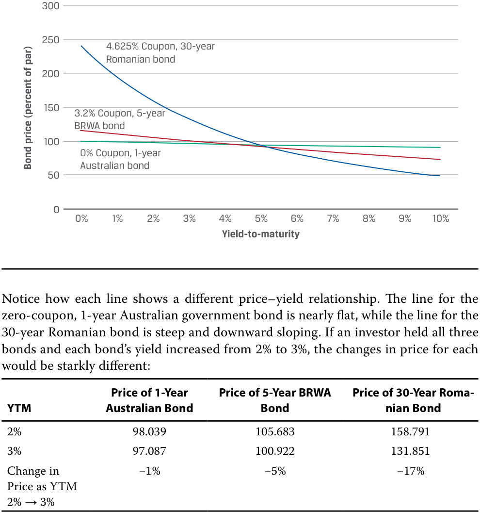
Chú thích hình ảnh: - Trục tung: Giá trái phiếu (phần trăm mệnh giá) (Bond price (percent of par)) từ 0 đến 300. - Trục hoành: Lợi suất đáo hạn (Yield-to-maturity) từ 0% đến 10%. - Các đường biểu diễn: Trái phiếu Romania 30 năm coupon 4.625% (đường dốc nhất); Trái phiếu BRWA 5 năm coupon 3.2% (đường có độ dốc trung bình); Trái phiếu Úc 1 năm coupon 0% (đường gần như nằm ngang). - Bảng tóm tắt trong hình:
YTM Giá Trái phiếu Úc 1 năm Giá Trái phiếu BRWA 5 năm Giá Trái phiếu Romania 30 năm 2% 98.039 105.683 158.791 3% 97.087 100.922 131.851 Thay đổi giá khi YTM 2% $\rightarrow$ 3% $-1\%$ $-5\%$ $-17\%$
Notice how each line shows a different price–yield relationship. The line for the zero-coupon, 1-year Australian government bond is nearly flat, while the line for the 30-year Romanian bond is steep and downward sloping. If an investor held all three bonds and each bond’s yield increased from 2% to 3%, the changes in price for each would be starkly different:
Hãy lưu ý cách mỗi đường thể hiện một mối quan hệ giá – lợi suất khác nhau. Đường biểu diễn của trái phiếu chính phủ Úc kỳ hạn 1 năm, không trả lãi định kỳ gần như nằm ngang, trong khi đường biểu diễn của trái phiếu Romania kỳ hạn 30 năm rất dốc và dốc xuống. Nếu một nhà đầu tư nắm giữ cả ba trái phiếu và lợi suất của mỗi trái phiếu tăng từ 2% lên 3%, sự thay đổi về giá của mỗi trái phiếu sẽ khác biệt rõ rệt:
While graphs of the price–yield relationship can help in visualizing different bonds’ interest rate risk, numbers are more useful so that investors can rank bonds by their price sensitivity to changes in yield.
Mặc dù đồ thị về mối quan hệ giá – lợi suất có thể giúp hình dung rủi ro lãi suất của các trái phiếu khác nhau, nhưng các con số lại hữu ích hơn để các nhà đầu tư có thể xếp hạng các trái phiếu theo độ nhạy giá của chúng đối với những thay đổi về lợi suất.
A logical numerical expression for a bond’s interest rate risk is the slope, or first derivative, of its price–yield line. We would expect the slope of the line for the one-year Australian bond, for example, to be relatively low, since the line is nearly flat. But we would expect the slope of the line for the 30-year Romanian bond to be high since that line is relatively steep. While candidates are not responsible for using calculus, we show the steps required to find the first derivative of the price–yield line to illustrate the logic behind the equations.
Một biểu thức số học hợp lý cho rủi ro lãi suất của trái phiếu là độ dốc (slope), hay đạo hàm bậc nhất (first derivative), của đường giá – lợi suất của nó. Chẳng hạn, chúng ta kỳ vọng độ dốc của đường biểu diễn trái phiếu Úc kỳ hạn một năm sẽ tương đối thấp, vì đường này gần như phẳng. Nhưng chúng ta kỳ vọng độ dốc của đường biểu diễn trái phiếu Romania kỳ hạn 30 năm sẽ cao vì đường đó tương đối dốc. Mặc dù ứng viên không cần chịu trách nhiệm về việc sử dụng phép tính vi phân (calculus), chúng tôi vẫn trình bày các bước cần thiết để tìm đạo hàm bậc nhất của đường giá – lợi suất nhằm minh họa logic đằng sau các phương trình.
Recall that the price, PV , of an option-free bond is the present value of the bond’s cash flows.
Hãy nhớ lại rằng giá, $PV$, của một trái phiếu không kèm quyền chọn (option-free bond) là giá trị hiện tại của các dòng tiền của trái phiếu đó.
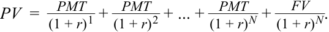
First, we take the derivative with respect to r , the yield-to-maturity:
Đầu tiên, chúng ta lấy đạo hàm theo $r$, lợi suất đáo hạn:
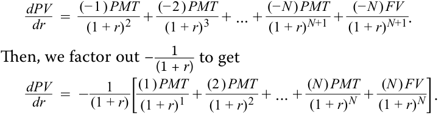
Sau đó, chúng ta đặt nhân tử chung $-\frac{1}{(1 + r)}$ ra ngoài để có được:
While this gives us the change in a bond’s price for a change in yield, it does so in terms of PV , but percentage change in price would be more useful. To get percentage change, we divide by PV (price):
Mặc dù điều này cho chúng ta biết mức thay đổi trong giá của một trái phiếu đối với một sự thay đổi trong lợi suất, nhưng nó lại thể hiện theo đơn vị của $PV$, trong khi mức thay đổi tính theo phần trăm của giá sẽ hữu ích hơn. Để có được mức thay đổi phần trăm, chúng ta chia cho $PV$ (giá):
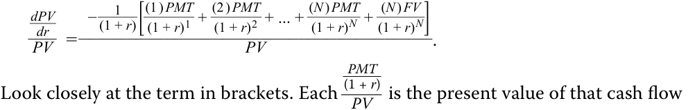
expressed as a percentage of the bond price, which is then multiplied by the time to receipt of that cash flow. In other words, the term in brackets divided by PV is the Macaulay duration, MacDur , introduced in prior lessons. We can substitute MacDur in the equation to obtain
Hãy nhìn kỹ vào biểu thức trong ngoặc vuông. Mỗi $\frac{PMT / (1 + r)^t}{PV}$ là giá trị hiện tại của dòng tiền đó được biểu thị dưới dạng phần trăm của giá trái phiếu, sau đó được nhân với thời gian nhận dòng tiền đó. Nói cách khác, biểu thức trong ngoặc vuông chia cho $PV$ chính là thời lượng Macaulay (Macaulay duration), $\text{MacDur}$, đã được giới thiệu trong các bài học trước. Chúng ta có thể thay thế $\text{MacDur}$ vào phương trình để thu được
or
hoặc
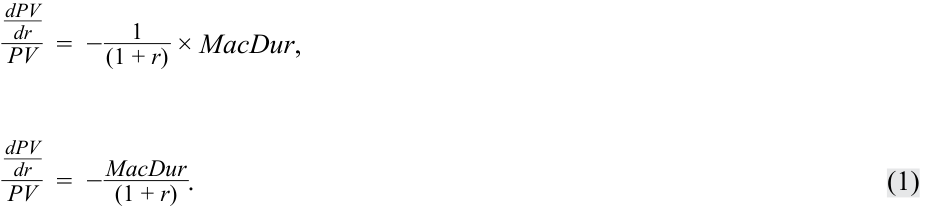
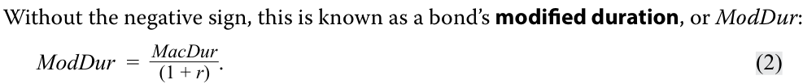
ModDur can be annualized, like Macaulay duration, by dividing by the number of coupon periods per year for the bond.
Nếu bỏ dấu âm đi, đại lượng này được gọi là thời lượng điều chỉnh (modified duration) của trái phiếu, hay $\text{ModDur}$:
$\text{ModDur}$ có thể được năm hóa (annualized), giống như thời lượng Macaulay, bằng cách chia cho số kỳ coupon mỗi năm của trái phiếu.
Since ModDur captures the relationship between a bond’s price and its yield, we can use it to estimate the percentage price change for a bond given a change in its yield-to-maturity, if we substitute – AnnModDur for the right side of Equation 1 and multiply both sides by dr , or the change in annualized yield-to-maturity:
Vì $\text{ModDur}$ nắm bắt mối quan hệ giữa giá trái phiếu và lợi suất của nó, chúng ta có thể sử dụng nó để ước tính phần trăm thay đổi giá của một trái phiếu khi biết mức thay đổi trong lợi suất đáo hạn của nó, nếu chúng ta thay thế $-\text{AnnModDur}$ cho vế phải của Phương trình 1 và nhân cả hai vế với $dr$, hay mức thay đổi trong lợi suất đáo hạn năm hóa:
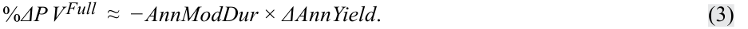
For example, if a bond’s modified duration is 5, its price will decrease by an estimated 5% for a 100 bp increase in yield: –5 × 0.01 = –5%. Therefore, the higher a bond’s modified duration, the steeper its price–yield relationship line is and the more sensitive its price is to changes in yield.
Ví dụ, nếu thời lượng điều chỉnh của một trái phiếu là 5, giá của nó sẽ giảm ước tính 5% khi lợi suất tăng 100 bp: $-5 \times 0.01 = -5\%$. Do đó, thời lượng điều chỉnh của một trái phiếu càng cao, đường quan hệ giá – lợi suất của nó càng dốc và giá của nó càng nhạy cảm với những thay đổi trong lợi suất.
The percentage price change refers to the full price, which includes accrued interest. The ≈ sign indicates that this calculation is an estimation because it is a linear approximation of the nonlinear relationship between price and yield, which will be covered in detail in a later lesson. The negative sign indicates that bond prices and yields-to-maturity move inversely with one another.
Phần trăm thay đổi giá đề cập đến giá toàn phần (full price), đã bao gồm lãi tích lũy (accrued interest). Ký hiệu $\approx$ cho biết phép tính này là một ước tính vì nó là một phép xấp xỉ tuyến tính (linear approximation) của mối quan hệ phi tuyến tính (nonlinear relationship) giữa giá và lợi suất, sẽ được trình bày chi tiết trong một bài học sau. Dấu âm chỉ ra rằng giá trái phiếu và lợi suất đáo hạn biến động ngược chiều với nhau.
Modified duration can also be obtained directly using the MDURATION function in Microsoft Excel or Google Sheets. The inputs are the same as the DURATION function to calculate Macaulay duration:
Thời lượng điều chỉnh cũng có thể thu được trực tiếp bằng cách sử dụng hàm MDURATION trong Microsoft Excel hoặc Google Sheets. Các thông số đầu vào giống như hàm DURATION dùng để tính thời lượng Macaulay:
= MDURATION( Settlement , Maturity , Coupon , Yld , Frequency , [ Basis ]).
= MDURATION(Settlement, Maturity, Coupon, Yld, Frequency, [Basis]).
EXAMPLE 1
VÍ DỤ 1 (EXAMPLE 1)
Modified Duration for the BRWA Bond
Thời lượng Điều chỉnh cho Trái phiếu BRWA (Modified Duration for the BRWA Bond)
We can use Equation 2 to calculate modified duration for the five-year BRWA bond for settlement at issuance and for 57 days after issuance.
Chúng ta có thể sử dụng Phương trình 2 để tính thời lượng điều chỉnh cho trái phiếu BRWA kỳ hạn 5 năm đối với việc thanh toán tại ngày phát hành và 57 ngày sau khi phát hành.
| Coupon | 3.20% |
|---|---|
| Coupon frequency per year | 2 |
| Đặc điểm | Giá trị |
|---|---|
| Lãi suất coupon (Coupon) | 3.20% |
| Tần suất trả coupon mỗi năm (Coupon frequency per year) | 2 |
| Price per 100 par value | 100 |
|---|---|
| Yield-to-maturity | 3.20% |
| Issuance date | 15 Oct. 2025 |
| Maturity | 15 Oct. 2030 |
| Years to maturity | 5 |
| Đặc điểm | Giá trị |
|---|---|
| Giá trên mỗi 100 mệnh giá (Price per 100 par value) | 100 |
| Lợi suất đáo hạn (Yield-to-maturity) | 3.20% |
| Ngày phát hành (Issuance date) | 15 Tháng 10, 2025 |
| Ngày đáo hạn (Maturity) | 15 Tháng 10, 2030 |
| Số năm đến khi đáo hạn (Years to maturity) | 5 |
| Period | Time to receipt |
Cash flow | PV | Weight | Time × Weight |
|---|---|---|---|---|---|
| 1 | 1.0000 | 1.6 | 1.5748 | 0.0157 | 0.0157 |
| 2 | 2.0000 | 1.6 | 1.5500 | 0.0155 | 0.0310 |
| 3 | 3.0000 | 1.6 | 1.5256 | 0.0153 | 0.0458 |
| 4 | 4.0000 | 1.6 | 1.5016 | 0.0150 | 0.0601 |
| 5 | 5.0000 | 1.6 | 1.4779 | 0.0148 | 0.0739 |
| 6 | 6.0000 | 1.6 | 1.4546 | 0.0145 | 0.0873 |
| 7 | 7.0000 | 1.6 | 1.4317 | 0.0143 | 0.1002 |
| 8 | 8.0000 | 1.6 | 1.4092 | 0.0141 | 0.1127 |
| 9 | 9.0000 | 1.6 | 1.3870 | 0.0139 | 0.1248 |
| 10 | 10.0000 | 101.6 | 86.6875 | 0.8669 | 8.6688 |
| 100.0000 | 1.0000 | 9.3203 |
| Kỳ (Period) | Thời gian nhận (Time to receipt) | Dòng tiền (Cash flow) | PV | Trọng số (Weight) | Thời gian × Trọng số (Time × Weight) |
|---|---|---|---|---|---|
| 1 | 1.0000 | 1.6 | 1.5748 | 0.0157 | 0.0157 |
| 2 | 2.0000 | 1.6 | 1.5500 | 0.0155 | 0.0310 |
| 3 | 3.0000 | 1.6 | 1.5256 | 0.0153 | 0.0458 |
| 4 | 4.0000 | 1.6 | 1.5016 | 0.0150 | 0.0601 |
| 5 | 5.0000 | 1.6 | 1.4779 | 0.0148 | 0.0739 |
| 6 | 6.0000 | 1.6 | 1.4546 | 0.0145 | 0.0873 |
| 7 | 7.0000 | 1.6 | 1.4317 | 0.0143 | 0.1002 |
| 8 | 8.0000 | 1.6 | 1.4092 | 0.0141 | 0.1127 |
| 9 | 9.0000 | 1.6 | 1.3870 | 0.0139 | 0.1248 |
| 10 | 10.0000 | 101.6 | 86.6875 | 0.8669 | 8.6688 |
| 100.0000 | 1.0000 | 9.3203 |
At issuance, the Macaulay duration is 9.3203. To solve for modified duration, we use Equation 2:
Tại thời điểm phát hành, thời lượng Macaulay là 9.3203. Để tìm thời lượng điều chỉnh, chúng ta sử dụng Phương trình 2:
ModDur = 9.17351; AnnModDur = 4.58676. For settlement 57 days after issuance, the Macaulay duration is 9.0036.
$\text{ModDur} = 9.17351$; $\text{AnnModDur} = 4.58676$. Đối với việc thanh toán 57 ngày sau khi phát hành, thời lượng Macaulay là 9.0036.
| Coupon | 3.20% |
|---|---|
| Coupon frequency per year | 1 |
| Price per 100 par value | 100 |
| Yield-to-maturity | 3.20% |
| Settlement date | 11 Dec. 2025 |
| Maturity | 15 Oct. 2030 |
| Years to maturity | 10 |
| Đặc điểm | Giá trị |
|---|---|
| Lãi suất coupon (Coupon) | 3.20% |
| Tần suất trả coupon mỗi năm (Coupon frequency per year) | 1 |
| Giá trên mỗi 100 mệnh giá (Price per 100 par value) | 100 |
| Lợi suất đáo hạn (Yield-to-maturity) | 3.20% |
| Ngày thanh toán (Settlement date) | 11 Tháng 12, 2025 |
| Ngày đáo hạn (Maturity) | 15 Tháng 10, 2030 |
| Số kỳ đến khi đáo hạn (Years/Periods to maturity) | 10 |
| Period | Time to receipt |
Cash flow | PV | Weight | Time × Weight |
|---|---|---|---|---|---|
| 1 | 0.6833 | 1.6 | 1.5827 | 0.0157 | 0.0108 |
| 2 | 1.6833 | 1.6 | 1.5578 | 0.0155 | 0.0261 |
| 3 | 2.6833 | 1.6 | 1.5333 | 0.0153 | 0.0409 |
| 4 | 3.6833 | 1.6 | 1.5091 | 0.0150 | 0.0553 |
| Kỳ (Period) | Thời gian nhận (Time to receipt) | Dòng tiền (Cash flow) | PV | Trọng số (Weight) | Thời gian × Trọng số (Time × Weight) |
|---|---|---|---|---|---|
| 1 | 0.6833 | 1.6 | 1.5827 | 0.0157 | 0.0108 |
| 2 | 1.6833 | 1.6 | 1.5578 | 0.0155 | 0.0261 |
| 3 | 2.6833 | 1.6 | 1.5333 | 0.0153 | 0.0409 |
| 4 | 3.6833 | 1.6 | 1.5091 | 0.0150 | 0.0553 |
| Period | Time to receipt |
Cash flow | PV | Weight | Time × Weight |
|---|---|---|---|---|---|
| 5 | 4.6833 | 1.6 | 1.4854 | 0.0148 | 0.0692 |
| 6 | 5.6833 | 1.6 | 1.4620 | 0.0145 | 0.0827 |
| 7 | 6.6833 | 1.6 | 1.4390 | 0.0143 | 0.0957 |
| 8 | 7.6833 | 1.6 | 1.4163 | 0.0141 | 0.1083 |
| 9 | 8.6833 | 1.6 | 1.3940 | 0.0139 | 0.1204 |
| 10 | 9.6833 | 101.6 | 87.1244 | 0.8669 | 8.3942 |
| 100.5039 | 1.0000 | 9.0036 |
| Kỳ (Period) | Thời gian nhận (Time to receipt) | Dòng tiền (Cash flow) | PV | Trọng số (Weight) | Thời gian × Trọng số (Time × Weight) |
|---|---|---|---|---|---|
| 5 | 4.6833 | 1.6 | 1.4854 | 0.0148 | 0.0692 |
| 6 | 5.6833 | 1.6 | 1.4620 | 0.0145 | 0.0827 |
| 7 | 6.6833 | 1.6 | 1.4390 | 0.0143 | 0.0957 |
| 8 | 7.6833 | 1.6 | 1.4163 | 0.0141 | 0.1083 |
| 9 | 8.6833 | 1.6 | 1.3940 | 0.0139 | 0.1204 |
| 10 | 9.6833 | 101.6 | 87.1244 | 0.8669 | 8.3942 |
| 100.5039 | 1.0000 | 9.0036 |
To solve for modified duration, we use Equation 2:
Để tìm thời lượng điều chỉnh, chúng ta sử dụng Phương trình 2:
ModDur = 8.86184; AnnModDur = 4.43092.
$\text{ModDur} = 8.86184$; $\text{AnnModDur} = 4.43092$.
If the annual yield on BRWA’s five-year, 3.2% semiannual coupon bond, settling on 15 October 2025 and maturing on 15 October 2030, were to instantaneously (right after issuance) increase by 80 bps, to 4.00%, the estimated change in price would be –3.67%.
Nếu lợi suất hàng năm của trái phiếu BRWA kỳ hạn 5 năm, trả coupon bán niên 3.2%, thanh toán vào ngày 15 tháng 10 năm 2025 và đáo hạn vào ngày 15 tháng 10 năm 2030, ngay lập tức (ngay sau khi phát hành) tăng 80 bps, lên mức 4.00%, thì mức thay đổi giá ước tính sẽ là $-3.67\%$.
%Δ PVFull ≈ –4.58676 × 0.0080 = –0.0366941.
If the yield-to-maturity were to instantaneously (right after issuance) decrease by 80 bps, to 2.40%, the estimated change in price would be +3.67%.
Nếu lợi suất đáo hạn ngay lập tức (ngay sau khi phát hành) giảm 80 bps, xuống mức 2.40%, thì mức thay đổi giá ước tính sẽ là $+3.67\%$.
%Δ PVFull ≈ –4.58676 × –0.0080 = 0.0366941.
Notice that the estimates for price changes are equal (in absolute value) for both an increase and a decrease in the yield-to-maturity. However, as we saw in Exhibit 1, the price–yield relationship is not a straight line but, rather, a curved or “convex” line. In a later lesson, we will add a “convexity adjustment” to account for this and improve the accuracy of price change estimations.
Hãy lưu ý rằng các ước tính về mức thay đổi giá là bằng nhau (về giá trị tuyệt đối) cho cả trường hợp tăng và giảm lợi suất đáo hạn. Tuy nhiên, như chúng ta đã thấy trong Bảng 1, mối quan hệ giá – lợi suất không phải là một đường thẳng mà là một đường cong hay đường “lồi” (convex). Trong một bài học sau, chúng ta sẽ thêm một “điều chỉnh độ lồi” (convexity adjustment) để tính đến điều này và cải thiện độ chính xác của các ước tính thay đổi giá.
Approximate Modified Duration
Thời lượng Điều chỉnh Xấp xỉ (Approximate Modified Duration)
While modified duration for a fixed-rate bond can be easily obtained if the Macaulay duration is already known, an alternative approach is to approximate modified duration by estimating the slope of the line tangent to the price–yield curve of a bond, as shown in Exhibit 2. This approach is useful for bonds with unknown Macaulay duration, owing to contingency features or default risk, which will be shown in later lessons.
Mặc dù thời lượng điều chỉnh cho một trái phiếu lãi suất cố định có thể dễ dàng thu được nếu đã biết thời lượng Macaulay, một phương pháp thay thế khác là xấp xỉ thời lượng điều chỉnh bằng cách ước tính độ dốc của đường tiếp tuyến (tangent line) với đường cong giá – lợi suất của trái phiếu, như được minh họa trong Bảng 2. Phương pháp này hữu ích đối với các trái phiếu chưa biết thời lượng Macaulay do có các điều khoản dự phòng (contingency features) hoặc rủi ro vỡ nợ (default risk), sẽ được trình bày trong các bài học sau.
Exhibit 2: Approximating Modified Duration
Bảng 2: Xấp xỉ Thời lượng Điều chỉnh (Exhibit 2: Approximating Modified Duration)
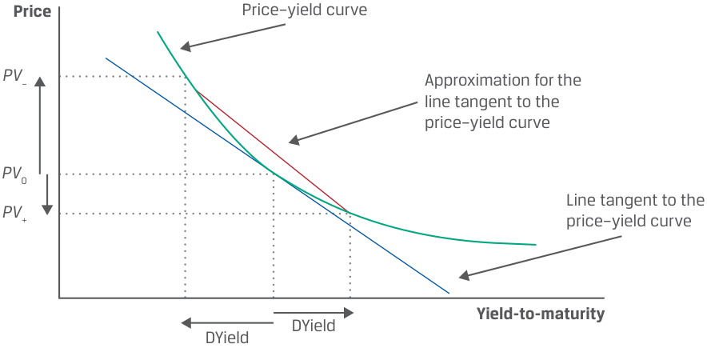
Chú thích hình ảnh: - Trục tung: Giá (Price) với các mức giá $PV_-$, $PV_0$, $PV_+$. - Trục hoành: Lợi suất đáo hạn (Yield-to-maturity) với hai khoảng thay đổi $\Delta \text{Yield}$ về hai phía. - Các đường biểu diễn: Đường cong giá – lợi suất (Price–yield curve), Đường tiếp tuyến với đường cong giá – lợi suất tại $PV_0$ (Line tangent to the price–yield curve), và Đường xấp xỉ cho đường tiếp tuyến đi qua $PV_-$ và $PV_+$ (Approximation for the line tangent to the price–yield curve).
The quoted full price of the bond is denoted PV 0. To estimate the slope, the yield-to-maturity is changed up and down by the same amount—the ΔYield—and is used to calculate corresponding bond prices PV + and PV –. We can use these variables to find the slope of the line tangent to the price–yield curve: the difference between PV + and PV – divided by twice the assumed change in the yield-to-maturity. To find the slope in terms of percentage change in PV 0, we further divide by PV 0. This is shown as Equation 4.
Giá toàn phần niêm yết của trái phiếu được ký hiệu là $PV_0$. Để ước tính độ dốc, lợi suất đáo hạn được điều chỉnh tăng và giảm một lượng bằng nhau—$\Delta \text{Yield}$—và được sử dụng để tính giá trái phiếu tương ứng $PV_+$ và $PV_-$. Chúng ta có thể sử dụng các biến số này để tìm độ dốc của đường tiếp tuyến với đường cong giá – lợi suất: chênh lệch giữa $PV_+$ và $PV_-$ chia cho hai lần mức thay đổi giả định trong lợi suất đáo hạn. Để tìm độ dốc tính theo phần trăm thay đổi của $PV_0$, chúng ta chia tiếp cho $PV_0$. Công thức này được thể hiện ở Phương trình 4.
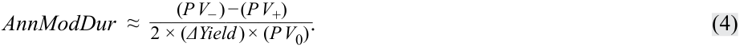
This equation approximates annualized modified duration; the frequency of coupon payments and the periodicity of the yield-to-maturity are included in the bond price calculations. The following example illustrates the accuracy of this approximation.
Phương trình này xấp xỉ thời lượng điều chỉnh năm hóa (annualized modified duration); tần suất thanh toán coupon và định kỳ (periodicity) của lợi suất đáo hạn đã được đưa vào trong các phép tính giá trái phiếu. Ví dụ sau đây minh họa độ chính xác của phép xấp xỉ này.
EXAMPLE 2
VÍ DỤ 2 (EXAMPLE 2)
Approximate Modified Duration for the BRWA Bond
Thời lượng Điều chỉnh Xấp xỉ cho Trái phiếu BRWA (Approximate Modified Duration for the BRWA Bond)
Consider BRWA’s 3.2% semiannual coupon payment bond for settlement 15 October 2025, maturing 15 October 2030 and yielding 3.2%. The full price ( PV 0) is par or 100.00.
Xét trái phiếu trả coupon bán niên 3.2% của BRWA thanh toán vào ngày 15 tháng 10 năm 2025, đáo hạn ngày 15 tháng 10 năm 2030 và có lợi suất 3.2%. Giá toàn phần ($PV_0$) bằng mệnh giá hay 100.00.
We can raise the annual yield-to-maturity by 5 bps, from 3.20% to 3.25% (denoted r +), to obtain PV + of 99.771.
Chúng ta có thể tăng lợi suất đáo hạn hàng năm thêm 5 bps, từ 3.20% lên 3.25% (ký hiệu là $r_+$), để thu được $PV_+$ bằng 99.771.
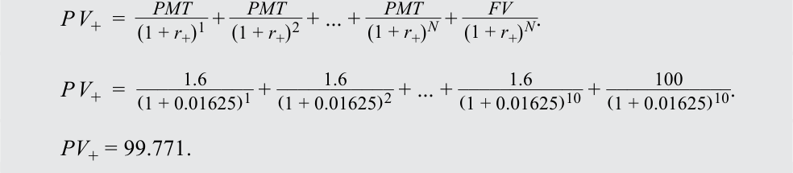
And we can lower the annual yield-to-maturity by 5 bps, from 3.20% to 3.15% (denoted r –), to obtain PV – of 100.230.
Và chúng ta có thể giảm lợi suất đáo hạn hàng năm đi 5 bps, từ 3.20% xuống 3.15% (ký hiệu là $r_-$), để thu được $PV_-$ bằng 100.230.
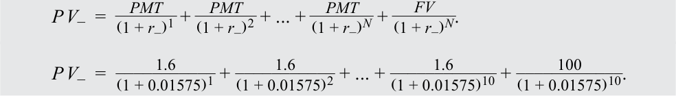
PV − = 100.230.
We can substitute these results into Equation 4 for the 5 bp change in the annual yield-to-maturity, or Δ Yield = 0.0005:
Chúng ta có thể thay thế các kết quả này vào Phương trình 4 cho mức thay đổi 5 bp trong lợi suất đáo hạn hàng năm, hay $\Delta \text{Yield} = 0.0005$:
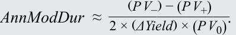
AnnModDur ≈ 4.587.
Thời lượng điều chỉnh hàng năm “chính xác” mà chúng ta đã tính cho trái phiếu BRWA này là 4.58675, và giá trị “xấp xỉ” là 4.586765—kết quả gần như giống hệt nhau. Do đó, mặc dù thời lượng có thể được tính bằng phương pháp thời lượng Macaulay, nhưng nó cũng có thể được ước tính khá chính xác.
The “exact” annual modified duration we calculated for this BRWA bond was 4.58675, and the “approximation” is 4.586765—virtually identical results. Therefore, although duration can be calculated using the Macaulay duration approach, it can also be estimated quite accurately.
The Macaulay duration also can be approximated by multiplying the approximate modified duration by 1 plus the yield per period.
Thời lượng Macaulay cũng có thể được xấp xỉ bằng cách nhân thời lượng điều chỉnh xấp xỉ với 1 cộng lợi suất mỗi kỳ.
- AnnMacDur≈AnnModDur× (1 +r) ~~(5)~~
QUESTION SET
BỘ CÂU HỎI (QUESTION SET)
- Suppose a 4%, semiannual coupon bond has an annualized Macaulay duration of 3.589. The anticipated percentage change in the bond’s full price if the bond’s yield rises from 5% to 6% is closest to:
A. 3.485%.
- Giả sử một trái phiếu trả coupon bán niên 4% có thời lượng Macaulay năm hóa là 3.589. Phần trăm thay đổi dự kiến trong giá toàn phần của trái phiếu nếu lợi suất của trái phiếu tăng từ 5% lên 6% gần nhất với:
-
A. 3.485%.
-
B. 3.502%.
-
C. 3.589%.
B. 3.502%.
Lời giải:
C. 3.589%.
B là đáp án đúng. Thời lượng Macaulay tính theo năm là 3.589; do đó, thời lượng điều chỉnh năm hóa là 3.502:
Solution:
B is correct. The Macaulay duration in years is 3.589; therefore, the annualized modified duration is 3.502%:
ModDur_ =MacDur( 1 + r) .
3.589 _ModDur =( 1 + 0.025).
ModDur = 3.502.
This results in an estimated percentage change in price for a 100 bp increase in yield of –3.502%:
Điều này dẫn đến phần trăm thay đổi giá ước tính đối với mức tăng 100 bp trong lợi suất là $-3.502\%$:
- %Δ PVFull ≈ − AnnModDur × Δ AnnYield .
%Δ PVFull ≈ −3.502 × 0.01.
%Δ PVFull ≈ −3.502%.
- True or false: Duration measures are used to measure the sensitivity of flat bond prices to changes in yields.
A. True
- Đúng hay sai: Các thước đo thời lượng được sử dụng để đo lường độ nhạy của giá tịnh (flat bond prices) đối với những thay đổi trong lợi suất.
- A. Đúng (True)
-
B. False
-
Solution:
-
B. Sai (False)
-
Lời giải:
B is correct. Duration measures are used to measure the sensitivity of full prices to changes in yields. Also known as the dirty price of a bond, full prices include the appropriate time value of each cash flow, whereas the flat price does not include accrued interest.
B là đáp án đúng. Các thước đo thời lượng được sử dụng để đo lường độ nhạy của giá toàn phần (full prices) đối với những thay đổi trong lợi suất. Còn được gọi là giá gộp (dirty price) của trái phiếu, giá toàn phần bao gồm giá trị thời gian thích hợp của mỗi dòng tiền, trong khi giá tịnh (flat price) không bao gồm lãi tích lũy (accrued interest).
- Bond C has a coupon rate of 1%, paid semiannually, and matures in five years. If its yield-to-maturity is –0.5%, its Macaulay duration is most likely :
-
A. less than its modified duration.
-
B. the same as its modified duration.
-
C. greater than its modified duration.
-
Solution:
- Trái phiếu C có lãi suất coupon là 1%, trả bán niên, và đáo hạn sau 5 năm. Nếu lợi suất đáo hạn của nó là $-0.5\%$, thời lượng Macaulay của nó nhiều khả năng nhất là:
-
A. nhỏ hơn thời lượng điều chỉnh của nó.
-
B. bằng với thời lượng điều chỉnh của nó.
-
C. lớn hơn thời lượng điều chỉnh của nó.
-
Lời giải:
A is correct. Recall that a bond’s modified duration is equal to its Macaulay duration divided by 1 plus its yield-to-maturity:
A là đáp án đúng. Hãy nhớ lại rằng thời lượng điều chỉnh của một trái phiếu bằng thời lượng Macaulay của nó chia cho 1 cộng với lợi suất đáo hạn định kỳ của nó:
ModDur_ =MacDur (1 + r ).
If the yield, r , is negative, the denominator will be less than 1, which results in a MacDur less than the modified duration.
- Consider a zero-coupon bond that matures in five years and is priced to yield 3%. The modified duration of this bond is:
-
A. less than five years.
-
B. five years.
Nếu lợi suất, $r$, mang dấu âm, mẫu số sẽ nhỏ hơn 1, dẫn đến $\text{MacDur}$ nhỏ hơn thời lượng điều chỉnh.
C. more than five years. Solution:
- Xét một trái phiếu không trả lãi định kỳ (zero-coupon bond) đáo hạn sau 5 năm và được định giá để đạt lợi suất 3%. Thời lượng điều chỉnh của trái phiếu này là:
-
A. nhỏ hơn 5 năm.
-
B. 5 năm.
-
C. lớn hơn 5 năm.
-
Lời giải:
A is correct. The Macaulay duration of a zero-coupon bond is its time-to-maturity, because a zero-coupon bond has a single cash flow with a present value weight of 1.0. The modified duration of this zero-coupon bond is less than its Macaulay duration because its yield is positive.
A là đáp án đúng. Thời lượng Macaulay của một trái phiếu không trả lãi định kỳ chính là thời gian đáo hạn của nó, bởi vì trái phiếu không trả lãi định kỳ chỉ có một dòng tiền duy nhất với trọng số giá trị hiện tại là 1.0. Thời lượng điều chỉnh của trái phiếu không trả lãi định kỳ này nhỏ hơn thời lượng Macaulay của nó vì lợi suất của nó là số dương.
Questions 5–7 relate to the following information .
Các câu hỏi 5–7 liên quan đến thông tin sau đây.
Deepak Chowdhury, a bond analyst, is evaluating the BRWA bond, the 1-year Australian government bond, and the 30-year Romanian government bond. Assuming that all three bonds were issued on 15 October 2025 and it is currently 15 January 2026, 92 days into the first coupon period, Chowdhury has compiled the following data:
Deepak Chowdhury, một chuyên viên phân tích trái phiếu, đang đánh giá trái phiếu BRWA, trái phiếu chính phủ Úc kỳ hạn 1 năm, và trái phiếu chính phủ Romania kỳ hạn 30 năm. Giả sử cả ba trái phiếu đều được phát hành vào ngày 15 tháng 10 năm 2025 và hiện tại là ngày 15 tháng 1 năm 2026, tức là đã qua 92 ngày trong kỳ coupon đầu tiên, Chowdhury đã tổng hợp dữ liệu sau:
| BRWA | Australian | Romanian | |
|---|---|---|---|
| Coupon | 3.200% | 0.000% | 4.625% |
| Coupon frequency | 2 | 1 | 1 |
| Yield-to-maturity | 3.200% | 1.000% | 4.250% |
| Maturity | 15 October 2030 | 15 October 2026 | 15 October 2055 |
| Đặc điểm | BRWA | Úc (Australian) | Romania (Romanian) |
|---|---|---|---|
| Lãi suất coupon (Coupon) | 3.200% | 0.000% | 4.625% |
| Tần suất trả coupon (Coupon frequency) | 2 | 1 | 1 |
| Lợi suất đáo hạn (Yield-to-maturity) | 3.200% | 1.000% | 4.250% |
| Ngày đáo hạn (Maturity) | 15 Tháng 10, 2030 | 15 Tháng 10, 2026 | 15 Tháng 10, 2055 |
5. Complete the following table:
5. Hoàn thành bảng sau:
| BRWA | Australian | Romanian | |
|---|---|---|---|
| Full price (per 100 of par value) | |||
| Macaulay duration |
| Chỉ tiêu | BRWA | Úc (Australian) | Romania (Romanian) |
|---|---|---|---|
| Giá toàn phần (trên 100 mệnh giá) (Full price per 100 of par value) | |||
| Thời lượng Macaulay (Macaulay duration) |
| BRWA Australian Romanian |
|---|
| Chỉ tiêu | BRWA | Úc (Australian) | Romania (Romanian) |
|---|---|---|---|
| Thời lượng điều chỉnh (Modified duration) | |||
| Giá toàn phần, giả sử YTM tăng 5 bp (Full price, assuming 5 bp YTM increase) | |||
| Giá toàn phần, giả sử YTM giảm 5 bp (Full price, assuming 5 bp YTM decrease) | |||
| Thời lượng điều chỉnh xấp xỉ (Approx. modified duration) |
| Modified duration |
|---|
| i Full price, assuming 5 bp YTM increase |
| Full price, assuming 5 bp YTM decrease |
| Approx. modified duration |
Lời giải:
Solution:
| Chỉ tiêu | BRWA | Úc (Australian) | Romania (Romanian) |
|---|---|---|---|
| Giá toàn phần (trên 100 mệnh giá) (Full price per 100 of par value) | 100.815 | 99.262 | 107.429 |
| Thời lượng Macaulay năm hóa (Annualized Macaulay duration) | 4.405 | 0.744 | 16.939 |
| Thời lượng điều chỉnh năm hóa (Annualized modified duration) | 4.335 | 0.737 | 16.248 |
| Giá toàn phần, giả sử YTM tăng 5 bp (Full price, assuming 5 bp YTM increase) | 100.596 | 99.225 | 106.561 |
| Giá toàn phần, giả sử YTM giảm 5 bp (Full price, assuming 5 bp YTM decrease) | 101.033 | 99.299 | 108.307 |
| Thời lượng điều chỉnh năm hóa xấp xỉ (Approx. annualized modified duration) | 4.335 | 0.737 | 16.249 |
| BRWA | Australian | Romanian | |
|---|---|---|---|
| Full price (per 100 of par value) | 100.815 | 99.262 | 107.429 |
| Annualized Macaulay duration | 4.405 | 0.744 | 16.939 |
| Annualized modified duration | 4.335 | 0.737 | 16.248 |
| Full price, assuming 5 bp YTM increase | 100.596 | 99.225 | 106.561 |
| Full price, assuming 5 bp YTM decrease | 101.033 | 99.299 | 108.307 |
| Approx. annualized modified duration | 4.335 | 0.737 | 16.249 |
Các phép tính được trình bày dưới dạng bảng. Vui lòng tham khảo hệ sinh thái học tập dành cho ứng viên trực tuyến (candidate learning ecosystem) để xem bảng tính trong sổ làm việc Microsoft Excel có thể tải xuống. Lưu ý rằng mặc dù kết quả được làm tròn đến ba chữ số thập phân, các đại lượng khác không được làm tròn khi tính toán mà chỉ hiển thị đến ba chữ số thập phân cho mục đích trình bày.
The calculations are shown in tabular form. Please refer to the candidate learning ecosystem online for a spreadsheet in the downloadable Microsoft Excel workbook. Note that while solutions are rounded to three decimal places, other quantities are unrounded but shown only to three decimal places for presentation purposes.
BRWA Bond: Full Price and Duration
Trái phiếu BRWA: Giá Toàn phần và Thời lượng (BRWA Bond: Full Price and Duration)
| YTM (peri | odic) | 0.01600 | |||
|---|---|---|---|---|---|
| Period | Time to Receipt |
Cash Flow | PV | Weight | Time × Weight |
| 1 | 0.489 | 1.600 | 1.588 | 0.016 | 0.008 |
| 2 | 1.489 | 1.600 | 1.563 | 0.016 | 0.023 |
| 3 | 2.489 | 1.600 | 1.538 | 0.015 | 0.038 |
| 4 | 3.489 | 1.600 | 1.514 | 0.015 | 0.052 |
| 5 | 4.489 | 1.600 | 1.490 | 0.015 | 0.066 |
| 6 | 5.489 | 1.600 | 1.466 | 0.015 | 0.080 |
| 7 | 6.489 | 1.600 | 1.443 | 0.014 | 0.093 |
| 8 | 7.489 | 1.600 | 1.421 | 0.014 | 0.106 |
| 9 | 8.489 | 1.600 | 1.398 | 0.014 | 0.118 |
| 10 | 9.489 | 101.600 | 87.394 | 0.867 | 8.226 |
| 100.815 | 1.000 | 8.809 | |||
| An | nualized Mac | aulay Duration | 4.405 | ||
| Modi | ified Duration | 8.670 | |||
| A i | nnualized Modi | ified Duration | 4.335 |
YTM (định kỳ – periodic): 0.01600
BRWA Bond: Full price, assuming 5 bp YTM increase
| Kỳ (Period) | Thời gian nhận (Time to Receipt) | Dòng tiền (Cash Flow) | PV | Trọng số (Weight) | Thời gian × Trọng số (Time × Weight) |
|---|---|---|---|---|---|
| 1 | 0.489 | 1.600 | 1.588 | 0.016 | 0.008 |
| 2 | 1.489 | 1.600 | 1.563 | 0.016 | 0.023 |
| 3 | 2.489 | 1.600 | 1.538 | 0.015 | 0.038 |
| 4 | 3.489 | 1.600 | 1.514 | 0.015 | 0.052 |
| 5 | 4.489 | 1.600 | 1.490 | 0.015 | 0.066 |
| 6 | 5.489 | 1.600 | 1.466 | 0.015 | 0.080 |
| 7 | 6.489 | 1.600 | 1.443 | 0.014 | 0.093 |
| 8 | 7.489 | 1.600 | 1.421 | 0.014 | 0.106 |
| 9 | 8.489 | 1.600 | 1.398 | 0.014 | 0.118 |
| 10 | 9.489 | 101.600 | 87.394 | 0.867 | 8.226 |
| 100.815 | 1.000 | 8.809 | |||
| Thời lượng Macaulay năm hóa (Annualized Macaulay Duration) | 4.405 | ||||
| Thời lượng điều chỉnh (Modified Duration) | 8.670 | ||||
| Thời lượng điều chỉnh năm hóa (Annualized Modified Duration) | 4.335 |
BRWA Bond: Full price, assuming 5 bp YTM decrease
Trái phiếu BRWA: Giá toàn phần, giả sử YTM tăng 5 bp | Trái phiếu BRWA: Giá toàn phần, giả sử YTM giảm 5 bp
YTM (periodic) 0.01625 YTM (periodic) 0.01575
YTM (định kỳ): 0.01625 | YTM (định kỳ): 0.01575
| Period | Time to Receipt |
Cash Flow | PV+ | Period | Time to Receipt |
Cash Flow | PV- |
|---|---|---|---|---|---|---|---|
| 1 | 0.489 | 1.600 | 1.587 | 1 | 0.489 | 1.600 | 1.588 |
| 2 | 1.489 | 1.600 | 1.562 | 2 | 1.489 | 1.600 | 1.563 |
| 3 | 2.489 | 1.600 | 1.537 | 3 | 2.489 | 1.600 | 1.539 |
| 4 | 3.489 | 1.600 | 1.513 | 4 | 3.489 | 1.600 | 1.515 |
| 5 | 4.489 | 1.600 | 1.488 | 5 | 4.489 | 1.600 | 1.492 |
| 6 | 5.489 | 1.600 | 1.465 | 6 | 5.489 | 1.600 | 1.468 |
| 7 | 6.489 | 1.600 | 1.441 | 7 | 6.489 | 1.600 | 1.446 |
| 8 | 7.489 | 1.600 | 1.418 | 8 | 7.489 | 1.600 | 1.423 |
| 9 | 8.489 | 1.600 | 1.395 | 9 | 8.489 | 1.600 | 1.401 |
| 10 | 9.489 | 101.600 | 87.190 | 10 | 9.489 | 101.600 | 87.598 |
| 100.596 | 101.033 |
| Kỳ (Period) | Thời gian nhận (Time to Receipt) | Dòng tiền (Cash Flow) | PV+ | Kỳ (Period) | Thời gian nhận (Time to Receipt) | Dòng tiền (Cash Flow) | PV- |
|---|---|---|---|---|---|---|---|
| 1 | 0.489 | 1.600 | 1.587 | 1 | 0.489 | 1.600 | 1.588 |
| 2 | 1.489 | 1.600 | 1.562 | 2 | 1.489 | 1.600 | 1.563 |
| 3 | 2.489 | 1.600 | 1.537 | 3 | 2.489 | 1.600 | 1.539 |
| 4 | 3.489 | 1.600 | 1.513 | 4 | 3.489 | 1.600 | 1.515 |
| 5 | 4.489 | 1.600 | 1.488 | 5 | 4.489 | 1.600 | 1.492 |
| 6 | 5.489 | 1.600 | 1.465 | 6 | 5.489 | 1.600 | 1.468 |
| 7 | 6.489 | 1.600 | 1.441 | 7 | 6.489 | 1.600 | 1.446 |
| 8 | 7.489 | 1.600 | 1.418 | 8 | 7.489 | 1.600 | 1.423 |
| 9 | 8.489 | 1.600 | 1.395 | 9 | 8.489 | 1.600 | 1.401 |
| 10 | 9.489 | 101.600 | 87.190 | 10 | 9.489 | 101.600 | 87.598 |
| 100.596 | 101.033 |
| BRWA Bond: Approx. Ann. Modified Duration | |
|---|---|
| PV0 | 100.815 |
| PV+ | 100.596 |
| PV- | 101.033 |
| Approximate Ann. ModDur | 4.335 |
| Trái phiếu BRWA: Thời lượng Điều chỉnh Năm hóa Xấp xỉ (Approx. Ann. Modified Duration) | Giá trị |
|---|---|
| PV0 | 100.815 |
| PV+ | 100.596 |
| PV- | 101.033 |
| Thời lượng điều chỉnh năm hóa xấp xỉ (Approximate Ann. ModDur) | 4.335 |
Trái phiếu Úc: Giá Toàn phần và Thời lượng (Australian Bond: Full Price and Duration)
YTM (định kỳ – periodic): 0.010
| Australian Bond: Full Price and Dura | tion | ||
|---|---|---|---|
| YTM (periodic) 0.010 |
|||
| Period Time to Receipt Cash Flow |
PV | Weight | Time × Weight |
| 1 0.744 100.000 |
99.262 | 1.000 | 0.744 |
| 99.262 | 1.000 | 0.744 | |
| Annua | lized Macaulay Duration |
0.744 | |
| Moi | dified Duration | 0.737 | |
| Annua i | lized Modified Duration |
0.737 | |
| Australian Bond: Full price, assum- | Austral | ian Bond: Full pri | ce, assuming |
| ing 5 bp YTM increase | 5 bp YT | M decrease | |
| YTM (periodic) 0.0105 |
YTM (p | eriodic) 0.00 |
95 |
| Kỳ (Period) | Thời gian nhận (Time to Receipt) | Dòng tiền (Cash Flow) | PV | Trọng số (Weight) | Thời gian × Trọng số (Time × Weight) |
|---|---|---|---|---|---|
| 1 | 0.744 | 100.000 | 99.262 | 1.000 | 0.744 |
| 99.262 | 1.000 | 0.744 | |||
| Thời lượng Macaulay năm hóa (Annualized Macaulay Duration) | 0.744 | ||||
| Thời lượng điều chỉnh (Modified Duration) | 0.737 | ||||
| Thời lượng điều chỉnh năm hóa (Annualized Modified Duration) | 0.737 |
Trái phiếu Úc: Giá toàn phần, giả sử YTM tăng 5 bp (YTM (periodic) = 0.0105) | Trái phiếu Úc: Giá toàn phần, giả sử YTM giảm 5 bp (YTM (periodic) = 0.0095)
| Time to | Cash | Time to | Cash | ||||
|---|---|---|---|---|---|---|---|
| Period | Receipt | Flow | PV+ | Period | Receipt | Flow | PV- |
| 1 | 0.744 | 100.000 | 99.225 | 1 | 0.744 | 100.000 | 99.299 |
| 99.225 | 99.299 |
| Kỳ (Period) | Thời gian nhận (Time to Receipt) | Dòng tiền (Cash Flow) | PV+ | Kỳ (Period) | Thời gian nhận (Time to Receipt) | Dòng tiền (Cash Flow) | PV- |
|---|---|---|---|---|---|---|---|
| 1 | 0.744 | 100.000 | 99.225 | 1 | 0.744 | 100.000 | 99.299 |
| 99.225 | 99.299 |
| Australian Bond: Approx. Ann. Modified Duration | |
|---|---|
| PV0 | 99.262 |
| PV+ | 99.225 |
| PV- | 99.299 |
| Approximate Ann. ModDur | 0.737 |
| Trái phiếu Úc: Thời lượng Điều chỉnh Năm hóa Xấp xỉ (Approx. Ann. Modified Duration) | Giá trị |
|---|---|
| PV0 | 99.262 |
| PV+ | 99.225 |
| PV- | 99.299 |
| Thời lượng điều chỉnh năm hóa xấp xỉ (Approximate Ann. ModDur) | 0.737 |
Romanian Bond: Full Price and Duration YTM (periodic) 0.0425
Trái phiếu Romania: Giá Toàn phần và Thời lượng (Romanian Bond: Full Price and Duration) — YTM (định kỳ): 0.0425
| Period | Time to Receipt |
Cash Flow | PV | Weight | Time × Weight |
|---|---|---|---|---|---|
| 1 | 0.744 | 4.625 | 4.484 | 0.042 | 0.031 |
| 2 | 1.744 | 4.625 | 4.301 | 0.040 | 0.070 |
| 3 | 2.744 | 4.625 | 4.126 | 0.038 | 0.105 |
| 4 | 3.744 | 4.625 | 3.958 | 0.037 | 0.138 |
| 5 | 4.744 | 4.625 | 3.796 | 0.035 | 0.168 |
| … | … | … | … | … | … |
| 29 | 28.744 | 4.625 | 1.398 | 0.013 | 0.374 |
| 30 | 29.744 | 104.625 | 30.337 | 0.282 | 8.400 |
| 107.429 | 1.000 | 16.939 | |||
| Annualiz | ed Macaulay | 16.939 | |||
| Duration | |||||
| Modii | fied Duration | 16.248 | |||
| i Annuali i |
i zed Modified Duration |
16.248 |
| Kỳ (Period) | Thời gian nhận (Time to Receipt) | Dòng tiền (Cash Flow) | PV | Trọng số (Weight) | Thời gian × Trọng số (Time × Weight) |
|---|---|---|---|---|---|
| 1 | 0.744 | 4.625 | 4.484 | 0.042 | 0.031 |
| 2 | 1.744 | 4.625 | 4.301 | 0.040 | 0.070 |
| 3 | 2.744 | 4.625 | 4.126 | 0.038 | 0.105 |
| 4 | 3.744 | 4.625 | 3.958 | 0.037 | 0.138 |
| 5 | 4.744 | 4.625 | 3.796 | 0.035 | 0.168 |
| … | … | … | … | … | … |
| 29 | 28.744 | 4.625 | 1.398 | 0.013 | 0.374 |
| 30 | 29.744 | 104.625 | 30.337 | 0.282 | 8.400 |
| 107.429 | 1.000 | 16.939 | |||
| Thời lượng Macaulay năm hóa (Annualized Macaulay Duration) | 16.939 | ||||
| Thời lượng điều chỉnh (Modified Duration) | 16.248 | ||||
| Thời lượng điều chỉnh năm hóa (Annualized Modified Duration) | 16.248 |
| Romanian Bond: Full price, assum- | Romanian Bond: Full price, assuming 5 |
|---|---|
| ing 5 bp YTM increase | bp YTM decrease |
| YTM (periodic) 0.0430 |
YTM (periodic) 0.0420 |
Trái phiếu Romania: Giá toàn phần, giả sử YTM tăng 5 bp (YTM (periodic) = 0.0430) | Trái phiếu Romania: Giá toàn phần, giả sử YTM giảm 5 bp (YTM (periodic) = 0.0420)
| Time | |||||||
|---|---|---|---|---|---|---|---|
| Period | Time to Receipt |
Cash Flow |
PV+ | Period | to Receipt |
Cash Flow |
PV- |
| 1 | 0.744 | 4.625 | 4.482 | 1 | 0.744 | 4.625 | 4.485 |
| 2 | 1.744 | 4.625 | 4.297 | 2 | 1.744 | 4.625 | 4.305 |
| Kỳ (Period) | Thời gian nhận (Time to Receipt) | Dòng tiền (Cash Flow) | PV+ | Kỳ (Period) | Thời gian nhận (Time to Receipt) | Dòng tiền (Cash Flow) | PV- |
|---|---|---|---|---|---|---|---|
| 1 | 0.744 | 4.625 | 4.482 | 1 | 0.744 | 4.625 | 4.485 |
| 2 | 1.744 | 4.625 | 4.297 | 2 | 1.744 | 4.625 | 4.305 |
Volume 6: Fixed Income
Learning Module 11 Yield-Based Bond Duration Measures and Properties
Part 2/2: Money Duration and Price Value of a Basis Point (PDF Pages 291–306)
Tập 6: Thu nhập Cố định (Fixed Income)
Học phần 11: Các Thước đo và Đặc tính Thời lượng Trái phiếu Dựa trên Lợi suất (Yield-Based Bond Duration Measures and Properties)
Phần 2/2: Thời lượng Tiền tệ và Giá trị Giá của một Điểm Cơ bản (Trang PDF 291–306)
| Period | Time to Receipt |
Cash Flow |
PV+ | Period | Time to Receipt |
Cash Flow |
PV- |
|---|---|---|---|---|---|---|---|
| 3 | 2.744 | 4.625 | 4.120 | 3 | 2.744 | 4.625 | 4.131 |
| 4 | 3.744 | 4.625 | 3.950 | 4 | 3.744 | 4.625 | 3.965 |
| 5 | 4.744 | 4.625 | 3.788 | 5 | 4.744 | 4.625 | 3.805 |
| … | … | … | … | … | … | … | … |
| 29 | 28.744 | 4.625 | 1.379 | 29 | 28.744 | 4.625 | 1.417 |
| 30 | 29.744 | 104.625 | 29.907 | 30 | 29.744 | 104.625 | 30.773 |
| 106.561 | 108.307 | ||||||
| Romani | an Bond: A | pprox. An i | n. Modifie | id Duration | |||
| PV0 | 10 | 7.429 | |||||
| PV+ | 10 | 6.561 | |||||
| PV- | 10 | 8.307 | |||||
| Approx. | ModDur | 1 | 6.249 |
| Kỳ (Period) | Thời gian nhận (Time to Receipt) | Dòng tiền (Cash Flow) | PV+ | Kỳ (Period) | Thời gian nhận (Time to Receipt) | Dòng tiền (Cash Flow) | PV- |
|---|---|---|---|---|---|---|---|
| 3 | 2.744 | 4.625 | 4.120 | 3 | 2.744 | 4.625 | 4.131 |
| 4 | 3.744 | 4.625 | 3.950 | 4 | 3.744 | 4.625 | 3.965 |
| 5 | 4.744 | 4.625 | 3.788 | 5 | 4.744 | 4.625 | 3.805 |
| … | … | … | … | … | … | … | … |
| 29 | 28.744 | 4.625 | 1.379 | 29 | 28.744 | 4.625 | 1.417 |
| 30 | 29.744 | 104.625 | 29.907 | 30 | 29.744 | 104.625 | 30.773 |
| 106.561 | 108.307 |
- Of these three bonds, identify which has the most and least interest rate risk. Justify your answers.
| Trái phiếu Romania: Thời lượng Điều chỉnh Năm hóa Xấp xỉ (Approx. Ann. Modified Duration) | Giá trị |
|---|---|
| PV0 | 107.429 |
| PV+ | 106.561 |
| PV- | 108.307 |
| Thời lượng điều chỉnh xấp xỉ (Approx. ModDur) | 16.249 |
Solution:
- Trong số ba trái phiếu này, hãy xác định trái phiếu nào có rủi ro lãi suất cao nhất và thấp nhất. Hãy giải thích câu trả lời của bạn.
The Romanian bond has the most interest rate risk, reflected in the bond’s Macaulay and modified durations, which are nearly four times that of the BRWA bond.
Lời giải:
The Australian bond has the least interest rate risk, because its Macaulay and modified durations are less than a quarter of that of the BRWA bond.
Trái phiếu Romania có rủi ro lãi suất cao nhất, được phản ánh qua thời lượng Macaulay và thời lượng điều chỉnh của trái phiếu này, cao gấp gần bốn lần so với trái phiếu BRWA.
- Chowdhury’s portfolio manager expects interest rates to decrease from current levels. Which of these three bonds would most likely perform best in that environment, all else equal? Justify your answer.
Trái phiếu Úc có rủi ro lãi suất thấp nhất, bởi vì thời lượng Macaulay và thời lượng điều chỉnh của nó chưa đến một phần tư so với trái phiếu BRWA.
- Nhà quản lý danh mục đầu tư của Chowdhury kỳ vọng lãi suất sẽ giảm từ mức hiện tại. Trong số ba trái phiếu này, trái phiếu nào nhiều khả năng nhất sẽ có thành quả hoạt động tốt nhất trong môi trường đó, khi các yếu tố khác không đổi? Hãy giải thích câu trả lời của bạn.
Solution:
Lời giải:
The Romanian bond would perform best. A decrease in interest rates would increase bond prices, with those having the greatest interest rate risk or duration having the highest increase.
Trái phiếu Romania sẽ hoạt động tốt nhất. Việc lãi suất giảm sẽ làm tăng giá trái phiếu, trong đó những trái phiếu có rủi ro lãi suất hoặc thời lượng lớn nhất sẽ có mức tăng giá cao nhất.
MONEY DURATION AND PRICE VALUE OF A BASIS POINT
THỜI LƯỢNG TIỀN TỆ VÀ GIÁ TRỊ GIÁ CỦA MỘT ĐIỂM CƠ BẢN (MONEY DURATION AND PRICE VALUE OF A BASIS POINT)
3
3
- define, calculate, and interpret modified duration, money duration, and the price value of a basis point (PVBP)
- định nghĩa, tính toán và diễn giải thời lượng điều chỉnh (modified duration), thời lượng tiền tệ (money duration), và giá trị giá của một điểm cơ bản (price value of a basis point – PVBP)
Modified duration is used to measure the percentage price change of a bond given a change in its yield-to-maturity. A related statistic is money duration . The money duration of a bond is a measure of the price change in currency units . The money duration can be stated per 100 of par value or in terms of the actual position size. In the United States, money duration is commonly called “dollar duration.”
Thời lượng điều chỉnh được sử dụng để đo lường phần trăm thay đổi giá của một trái phiếu khi có một sự thay đổi trong lợi suất đáo hạn của nó. Một số liệu thống kê có liên quan là thời lượng tiền tệ (money duration). Thời lượng tiền tệ của một trái phiếu là thước đo mức thay đổi giá tính bằng đơn vị tiền tệ (currency units). Thời lượng tiền tệ có thể được biểu thị trên mỗi 100 mệnh giá hoặc theo quy mô vị thế thực tế. Tại Hoa Kỳ, thời lượng tiền tệ thường được gọi là “thời lượng đô la” (dollar duration).
Money duration ( MoneyDur ) is the product of the annualized modified duration and the full price ( PVFull ) of the bond, in either percent of par or the currency value of the position.
Thời lượng tiền tệ ($\text{MoneyDur}$) là tích số của thời lượng điều chỉnh năm hóa và giá toàn phần ($PV^{\text{Full}}$) của trái phiếu, tính theo phần trăm mệnh giá hoặc giá trị tiền tệ của vị thế.
MoneyDur = AnnModDur × PVFull . ~~(6)~~
The estimated change in the bond price in currency units is very similar to Equation 4. The difference is that for a given change in the annual yield-to-maturity (Δ Yield ), modified duration estimates the percentage price change while money duration estimates the change in currency units.
Mức thay đổi ước tính trong giá trái phiếu tính bằng đơn vị tiền tệ rất giống với Phương trình 4. Sự khác biệt là đối với một mức thay đổi nhất định trong lợi suất đáo hạn hàng năm ($\Delta \text{Yield}$), thời lượng điều chỉnh ước tính phần trăm thay đổi giá trong khi thời lượng tiền tệ ước tính mức thay đổi tính bằng đơn vị tiền tệ.
Δ PVFull ≈ − MoneyDur × Δ Yield ~~(7)~~
BRWA’s five-year, 3.2% semiannual coupon bond, maturing 15 October 2030, is priced to yield 3.2%. Assume it is purchased by an institutional investor for settlement on 11 December 2025, so 57 days into the first coupon period ( t / T = 57/180).
Trái phiếu trả coupon bán niên 3.2%, kỳ hạn 5 năm của BRWA, đáo hạn vào ngày 15 tháng 10 năm 2030, được định giá để đạt lợi suất 3.2%. Giả sử nó được một nhà đầu tư định chế mua với ngày thanh toán là 11 tháng 12 năm 2025, tức là đã qua 57 ngày trong kỳ coupon đầu tiên ($t / T = 57/180$).
The full price of the bond is 100.504 per 100 of par value, and the annualized modified duration is 4.43092. Suppose the investor has a position in the bond for a par value of USD100,000,000. Consequently,
Giá toàn phần của trái phiếu là 100.504 trên mỗi 100 mệnh giá, và thời lượng điều chỉnh năm hóa là 4.43092. Giả sử nhà đầu tư nắm giữ một vị thế trái phiếu có mệnh giá là 100,000,000 USD. Do đó,
-
the market value of the investment is USD100,503,921, and
-
the money duration of the investment is USD445,324,719 (= 4.43092 × USD100,503,921).
-
giá trị thị trường của khoản đầu tư là 100,503,921 USD, và
-
thời lượng tiền tệ của khoản đầu tư là 445,324,719 USD ($= 4.43092 \times \text{100,503,921 USD}$).
Therefore, if the yield-to-maturity rises by 100 bps—from 3.20% to 4.20%—the expected loss is approximately USD4,453,247 (= –USD445,324,719 × 0.0100).
Do đó, nếu lợi suất đáo hạn tăng 100 bps—từ 3.20% lên 4.20%—khoản lỗ kỳ vọng xấp xỉ bằng 4,453,247 USD ($= -\text{445,324,719 USD} \times 0.0100$).
A similar measure is the price value of a basis point (PVBP) , an estimate of the change in the full price of a bond given a 1 bp change in its yield-to-maturity. The PVBP can be calculated using a formula like that for approximating modified duration. Equation 8 is the formula for the PVBP. PV – and PV + are the full prices calculated by decreasing and increasing the yield-to-maturity by 1 bp.
Một thước đo tương tự là giá trị giá của một điểm cơ bản (price value of a basis point – PVBP), là ước tính mức thay đổi trong giá toàn phần của một trái phiếu khi lợi suất đáo hạn của nó thay đổi 1 bp. PVBP có thể được tính bằng một công thức giống như công thức xấp xỉ thời lượng điều chỉnh. Phương trình 8 là công thức tính PVBP. $PV_-$ và $PV_+$ là các mức giá toàn phần được tính bằng cách giảm và tăng lợi suất đáo hạn đi 1 bp.
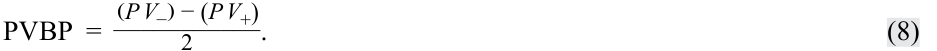
The PVBP is also called the “PV01,” standing for the “price value of an 01” or “present value of an 01,” where “01” means 1 bp. In the United States, it is commonly called the “DV01” for the “dollar value” of 1 bp. The PVBP is particularly useful for bonds for which future cash flows are uncertain, such as callable bonds. A related statistic called a “basis point value” (BPV) is simply the money duration times 0.0001 (1 bp).
PVBP còn được gọi là “PV01”, viết tắt của “giá trị giá của một 01” (price value of an 01) hoặc “giá trị hiện tại của một 01” (present value of an 01), trong đó “01” có nghĩa là 1 bp. Tại Hoa Kỳ, nó thường được gọi là “DV01” viết tắt của “giá trị đô la” (dollar value) của 1 bp. PVBP đặc biệt hữu ích đối với những trái phiếu có dòng tiền tương lai không chắc chắn, chẳng hạn như trái phiếu có thể mua lại (callable bonds). Một số liệu thống kê liên quan được gọi là “giá trị điểm cơ bản” (basis point value – BPV) đơn giản là thời lượng tiền tệ nhân với 0.0001 (1 bp).
For a numerical example of the PVBP calculation, again consider BRWA’s fiveyear, 3.2% semiannual coupon bond, maturing 15 October 2030 and priced to yield 3.2%, purchased by the institutional investor for settlement on 11 December 2025, so 57 days into the first coupon period ( t / T = 57/180).
Để có một ví dụ bằng số về phép tính PVBP, hãy xét lại trái phiếu trả coupon bán niên 3.2%, kỳ hạn 5 năm của BRWA, đáo hạn ngày 15 tháng 10 năm 2030 và được định giá để đạt lợi suất 3.2%, được nhà đầu tư định chế mua với ngày thanh toán là 11 tháng 12 năm 2025, tức là đã qua 57 ngày trong kỳ coupon đầu tiên ($t / T = 57/180$).
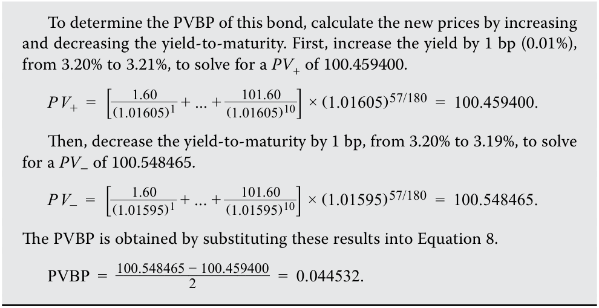
Exhibit 3 provides a summary of the various yield duration statistics. To recap, they measure the instantaneous change in a bond’s price for a given change in its own yield-to-maturity, assuming all other variables (especially, time-to-maturity) are unchanged and the underlying cash flows are certain.
Để xác định PVBP của trái phiếu này, hãy tính các mức giá mới bằng cách tăng và giảm lợi suất đáo hạn. Đầu tiên, tăng lợi suất thêm 1 bp (0.01%), từ 3.20% lên 3.21%, để tìm ra $PV_+$ bằng 100.459400:
Sau đó, giảm lợi suất đáo hạn đi 1 bp, từ 3.20% xuống 3.19%, để tìm ra $PV_-$ bằng 100.548465:
Exhibit 3: Summary of Yield-Based Duration Statistics
PVBP thu được bằng cách thay các kết quả này vào Phương trình 8:
Bảng 3 cung cấp tóm tắt về các số liệu thống kê thời lượng lợi suất (yield duration) khác nhau. Để tóm tắt lại, chúng đo lường sự thay đổi tức thời trong giá của một trái phiếu đối với một sự thay đổi nhất định trong chính lợi suất đáo hạn của nó, giả định tất cả các biến số khác (đặc biệt là thời gian đáo hạn) không thay đổi và các dòng tiền cơ sở là chắc chắn.
Bảng 3: Tóm tắt Các Số liệu Thống kê Thời lượng Dựa trên Lợi suất (Exhibit 3: Summary of Yield-Based Duration Statistics)
| Measure | Calculation | Use |
|---|---|---|
| Macaulay duration |
Average time to receipt of prom- ised cash flows, weighted by shares of the full price corresponding to each promised future cash flow |
Holding period that would balance reinvestment and price risks for an investor |
| Modified | l First derivative of price with |
Estimate the percentage price change |
| i duration |
respect to yield; Macaulay duration divided by 1 + yield per period |
for a bond given a change in its yield-to-maturity |
| Money duration |
Modified duration multiplied by full price of bond or bond position |
Estimate price change in bond invest- ment for a given yield change |
| Price value of a basis point |
Difference in price of a 1 bp yield decrease and a 1 bp yield increase, divided by 2 |
Estimate of the change in the bond price given a 1 bp change in the yield-to-maturity |
| Thước đo (Measure) | Cách tính (Calculation) | Công dụng (Use) |
|---|---|---|
| Thời lượng Macaulay (Macaulay duration) | Thời gian trung bình để nhận các dòng tiền cam kết, có trọng số là tỷ trọng của giá toàn phần tương ứng với mỗi dòng tiền cam kết trong tương lai | Thời kỳ nắm giữ (holding period) giúp cân bằng rủi ro tái đầu tư và rủi ro giá cho nhà đầu tư |
| Thời lượng điều chỉnh (Modified duration) | Đạo hàm bậc nhất của giá theo lợi suất; Thời lượng Macaulay chia cho $1 + \text{lợi suất mỗi kỳ}$ | Ước tính phần trăm thay đổi giá của một trái phiếu đối với một sự thay đổi trong lợi suất đáo hạn của nó |
| Thời lượng tiền tệ (Money duration) | Thời lượng điều chỉnh nhân với giá toàn phần của trái phiếu hoặc vị thế trái phiếu | Ước tính mức thay đổi giá trong khoản đầu tư trái phiếu đối với một mức thay đổi lợi suất nhất định |
| Giá trị giá của một điểm cơ bản (Price value of a basis point) | Chênh lệch giá khi lợi suất giảm 1 bp và tăng 1 bp, chia cho 2 | Ước tính mức thay đổi trong giá trái phiếu khi lợi suất đáo hạn thay đổi 1 bp |
Yield Duration of Zero-Coupon and Perpetual Bonds
Thời lượng Lợi suất của Trái phiếu Không trả lãi Định kỳ và Trái phiếu Vĩnh cửu (Yield Duration of Zero-Coupon and Perpetual Bonds)
Because zero-coupon bonds have a single payment, the face value at maturity, the present weighted-average time to receipt of cash flows is the same as the time-to-maturity because that single cash flow has a present value weight of 1.0. Therefore, the Macaulay duration of a zero-coupon bond is its time-to-maturity, and modified duration is its time-to-maturity divided by 1 plus its yield.
Bởi vì trái phiếu không trả lãi định kỳ (zero-coupon bonds) chỉ có một khoản thanh toán duy nhất là mệnh giá khi đáo hạn, nên thời gian trung bình có trọng số giá trị hiện tại để nhận các dòng tiền cũng chính là thời gian đáo hạn vì dòng tiền duy nhất đó có trọng số giá trị hiện tại là 1.0. Do đó, thời lượng Macaulay của một trái phiếu không trả lãi định kỳ chính là thời gian đáo hạn của nó, và thời lượng điều chỉnh là thời gian đáo hạn chia cho 1 cộng với lợi suất của nó.
A perpetuity or perpetual bond is a bond that does not mature, so there is no face or maturity value received at time T . The investor receives a fixed coupon payment forever unless the bond is called. Non-callable perpetuities are rare, but they have an interesting Macaulay duration:
Một công cụ nợ vĩnh cửu (perpetuity) hay trái phiếu vĩnh cửu (perpetual bond) là một trái phiếu không bao giờ đáo hạn, vì vậy không có mệnh giá hay giá trị đáo hạn nào được nhận tại thời điểm $T$. Nhà đầu tư nhận được một khoản thanh toán coupon cố định mãi mãi trừ khi trái phiếu bị mua lại. Các trái phiếu vĩnh cửu không thể mua lại (non-callable perpetuities) rất hiếm, nhưng chúng có một thời lượng Macaulay rất thú vị:
MacDur = (1 + r )/ r .
Duration of Floating-Rate Notes and Loans
Thời lượng của Trái phiếu và Khoản vay Lãi suất Thả nổi (Duration of Floating-Rate Notes and Loans)
As described in an earlier lesson, interest on floating-rate instruments varies depending on the level of a market reference rate (MRR) plus a quoted margin. At predetermined dates, payment amounts are reset to reflect changes in the MRR. Therefore, interest rate risk arises only between reset dates, because at the next reset date, coupon payments will adjust to the new MRR. Therefore, the Macaulay duration for a floating-rate note or bond is simply the fraction of a period remaining until the next reset date:
Như đã mô tả trong một bài học trước, tiền lãi trên các công cụ lãi suất thả nổi thay đổi tùy thuộc vào mức lãi suất tham chiếu thị trường (market reference rate – MRR) cộng với một biên độ niêm yết (quoted margin). Vào các ngày đã định trước, số tiền thanh toán được đặt lại (reset) để phản ánh những thay đổi trong MRR. Do đó, rủi ro lãi suất chỉ phát sinh giữa các ngày đặt lại lãi suất, bởi vì vào ngày đặt lại tiếp theo, các khoản thanh toán coupon sẽ điều chỉnh theo mức MRR mới. Vì vậy, thời lượng Macaulay đối với một trái phiếu hoặc kỳ phiếu lãi suất thả nổi đơn giản là phần kỳ hạn còn lại cho đến ngày đặt lại lãi suất tiếp theo:
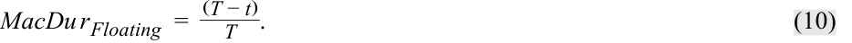
If there are 180 days in the coupon period and 57 days have passed since the last coupon, the Macaulay duration is
Nếu có 180 ngày trong kỳ coupon và 57 ngày đã trôi qua kể từ lần trả coupon gần nhất, thời lượng Macaulay là
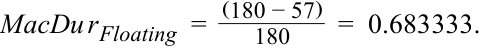
Floating-rate instruments typically have very low duration because coupon periods are typically less than six months in length. As a result, they are commonly used by investors to reduce duration in fixed-income portfolios.
Các công cụ lãi suất thả nổi thường có thời lượng rất thấp bởi vì các kỳ coupon thường ngắn hơn sáu tháng. Do đó, chúng thường được các nhà đầu tư sử dụng để giảm thời lượng trong các danh mục đầu tư thu nhập cố định.
KNOWLEDGE CHECK
KIỂM TRA KIẾN THỨC (KNOWLEDGE CHECK)
An analyst is comparing the interest rate risk of the BRWA 3.2% bond maturing 15 October 2030 to a floating-rate note (FRN) that also matures 15 October 2030 and has its coupon reset semiannually.
Một chuyên viên phân tích đang so sánh rủi ro lãi suất của trái phiếu BRWA 3.2% đáo hạn ngày 15 tháng 10 năm 2030 với một trái phiếu lãi suất thả nổi (floating-rate note – FRN) cũng đáo hạn ngày 15 tháng 10 năm 2030 và có lãi suất coupon được đặt lại mỗi nửa năm.
At the last reset, 15 October 2027, the coupon rate of the FRN was 3.2%. The BRWA bond was priced to yield 3.2% at that same date.
Tại lần đặt lại gần nhất, ngày 15 tháng 10 năm 2027, lãi suất coupon của FRN là 3.2%. Trái phiếu BRWA được định giá để đạt lợi suất 3.2% vào cùng ngày đó.
- Why would you expect the FRN to have a lower duration than the BRWA fixed-rate bond?
- Tại sao bạn lại kỳ vọng FRN có thời lượng thấp hơn trái phiếu lãi suất cố định BRWA?
Solution:
Lời giải:
A floating-rate instrument has a Macaulay duration that reflects the time to the next coupon reset date, while a fixed-rate instrument has a Macaulay duration that primarily reflects time-to-maturity but also its coupon rate, yield, and fraction of the coupon period that has passed. The maximum Macaulay duration the FRN would have is six months, while the BRWA bond has a Macaulay duration slightly lower than its maturity (five years).
Một công cụ lãi suất thả nổi có thời lượng Macaulay phản ánh thời gian cho đến ngày đặt lại coupon tiếp theo, trong khi một công cụ lãi suất cố định có thời lượng Macaulay chủ yếu phản ánh thời gian đáo hạn nhưng cũng phụ thuộc vào lãi suất coupon, lợi suất và phần kỳ coupon đã trôi qua. Thời lượng Macaulay tối đa mà FRN có thể có là sáu tháng, trong khi trái phiếu BRWA có thời lượng Macaulay thấp hơn một chút so với kỳ hạn của nó (5 năm).
- Complete the following table:
- Hoàn thành bảng sau:
| Macaulay duration | |
|---|---|
| BRWA FRN |
|
| 15-Oct-2027 | |
| 15-Nov-2027 | |
| 15-Dec-2027 | |
| 15-Jan-2028 | |
| 15-Feb-2028 | |
| 15-Mar-2028 | |
| 15-Apr-2028 |
| Ngày | Thời lượng Macaulay (BRWA) | Thời lượng Macaulay (FRN) |
|---|---|---|
| 15-Th10-2027 | ||
| 15-Th11-2027 | ||
| 15-Th12-2027 | ||
| 15-Th1-2028 | ||
| 15-Th2-2028 | ||
| 15-Th3-2028 | ||
| 15-Th4-2028 |
Solution:
Lời giải:
| Macaulay | duration | |
|---|---|---|
| BRWA | FRN | |
| 15-Oct-2027 | 2.8843 | 0.0000 |
| 15-Nov-2027 | 2.8002 | 0.8306 |
| 15-Dec-2027 | 2.7169 | 0.6667 |
| 15-Jan-2028 | 2.6336 | 0.4973 |
| 15-Feb-2028 | 2.5502 | 0.3279 |
| 15-Mar-2028 | 2.4669 | 0.1694 |
| 15-Apr-2028 | 2.4221 | 0.0000 |
| Ngày | Thời lượng Macaulay (BRWA) | Thời lượng Macaulay (FRN) |
|---|---|---|
| 15-Th10-2027 | 2.8843 | 0.0000 |
| 15-Th11-2027 | 2.8002 | 0.8306 |
| 15-Th12-2027 | 2.7169 | 0.6667 |
| 15-Th1-2028 | 2.6336 | 0.4973 |
| 15-Th2-2028 | 2.5502 | 0.3279 |
| 15-Th3-2028 | 2.4669 | 0.1694 |
| 15-Th4-2028 | 2.4221 | 0.0000 |
For example, for 15 December 2027, the number of days since the next coupon is 61 days. The number of days in the coupon period is 183, calculated using Microsoft Excel or Google Sheets as
Ví dụ, đối với ngày 15 tháng 12 năm 2027, số ngày đã qua kể từ kỳ trả coupon trước là 61 ngày. Số ngày trong kỳ coupon là 183, được tính bằng Microsoft Excel hoặc Google Sheets như sau:
- = COUPDAYS(DATE(2027,12,15),DATE(2028,4,15),2,1).
= COUPDAYS(DATE(2027,12,15),DATE(2028,4,15),2,1).
Therefore, the Macaulay duration is (183 – 61)÷183 = 0.6667.
Do đó, thời lượng Macaulay là $(183 - 61) \div 183 = 0.6667$.
QUESTION SET
BỘ CÂU HỎI (QUESTION SET)
Deepak Chowdhury is evaluating a USD30 million investment in par value terms in the BRWA, Australian, and Romanian bonds. Assume all bonds are denominated in the same currency and that all three bonds were issued on 15 October 2025.
Deepak Chowdhury đang đánh giá một khoản đầu tư trị giá 30 triệu USD tính theo mệnh giá vào các trái phiếu BRWA, Úc và Romania. Giả sử tất cả các trái phiếu đều được định danh bằng cùng một đồng tiền và cả ba trái phiếu đều được phát hành vào ngày 15 tháng 10 năm 2025.
Chowdhury is evaluating the bonds on 15 January 2026, 92 days into the first coupon period. Chowdhury has compiled the following data.
Chowdhury đang đánh giá các trái phiếu vào ngày 15 tháng 1 năm 2026, tức là đã qua 92 ngày trong kỳ coupon đầu tiên. Chowdhury đã tổng hợp dữ liệu sau.
| Characteristic | BRWA | Australian | Romanian |
|---|---|---|---|
| Coupon | 3.200% | 0.000% | 4.625% |
| Coupon frequency | 2 | 1 | 1 |
| Yield-to-maturity | 3.200% | 1.000% | 4.250% |
| Maturity | 15 October 2030 | 15 October 2026 | 15 October 2055 |
| Full price | 100.815 | 99.262 | 107.429 |
| Ann. Macaulay | 4.405 | 0.744 | 16.939 |
| duration | |||
| Ann. modified duration | 4.335 | 0.737 | 16.248 |
| Đặc điểm (Characteristic) | BRWA | Úc (Australian) | Romania (Romanian) |
|---|---|---|---|
| Lãi suất coupon (Coupon) | 3.200% | 0.000% | 4.625% |
| Tần suất trả coupon (Coupon frequency) | 2 | 1 | 1 |
| Lợi suất đáo hạn (Yield-to-maturity) | 3.200% | 1.000% | 4.250% |
| Ngày đáo hạn (Maturity) | 15 Tháng 10, 2030 | 15 Tháng 10, 2026 | 15 Tháng 10, 2055 |
| Giá toàn phần (Full price) | 100.815 | 99.262 | 107.429 |
| Thời lượng Macaulay năm hóa (Ann. Macaulay duration) | 4.405 | 0.744 | 16.939 |
| Thời lượng điều chỉnh năm hóa (Ann. modified duration) | 4.335 | 0.737 | 16.248 |
As part of his analysis, Chowdhury is evaluating the potential change in the prices of the bond investments for 1 bp and 100 bp changes in yields.
Là một phần trong phân tích của mình, Chowdhury đang đánh giá mức thay đổi tiềm năng trong giá của các khoản đầu tư trái phiếu đối với các mức thay đổi 1 bp và 100 bp trong lợi suất.
- Complete the following table:
- Hoàn thành bảng sau:
| Effec | ft on a USD30 investment |
f million | |
|---|---|---|---|
| BRWA | Australian | Romanian | |
| Price value per basis point | |||
| Market value of investment (USD) |
| Tác động lên khoản đầu tư 30 triệu USD (Effect on a USD30 million investment) | BRWA | Úc (Australian) | Romania (Romanian) |
|---|---|---|---|
| Giá trị giá trên mỗi điểm cơ bản (Price value per basis point) | |||
| Giá trị thị trường của khoản đầu tư (USD) (Market value of investment) |
| Effect on a USD30 million investment |
|---|
| BRWA Australian Romanian |
| Tác động lên khoản đầu tư 30 triệu USD (Effect on a USD30 million investment) | BRWA | Úc (Australian) | Romania (Romanian) |
|---|---|---|---|
| Thời lượng tiền tệ (phần trăm mệnh giá) (Money duration - percent of par) | |||
| Khoản lỗ kỳ vọng khi YTM tăng 100 bp (USD) (Expected loss from a 100 bp YTM increase) |
| Money duration (percent of par) |
|---|
| Expected loss from a 100 bp YTM |
| increase (USD) |
Lời giải:
Solution:
| Tác động lên khoản đầu tư 30 triệu USD (Effect on a USD30 million investment) | BRWA | Úc (Australia) | Romania |
|---|---|---|---|
| Giá trị giá trên mỗi điểm cơ bản (Price value per basis point) | 0.044 | 0.007 | 0.175 |
| Giá trị thị trường của khoản đầu tư (USD) (Market value of investment) | 30,244,381 | 29,778,597 | 32,228,627 |
| Thời lượng tiền tệ (phần trăm mệnh giá) (Money duration - percent of par) | 437.054 | 73.163 | 1745.518 |
| Khoản lỗ kỳ vọng khi YTM tăng 100 bp (USD) (Expected loss from a 100 bp YTM increase) | –1,311,163 | –219,490 | –5,236,553 |
| Effect on a | f USD30 million i | f nvestment | |
|---|---|---|---|
| BRWA | Australia | Romania | |
| Price value per basis point | 0.044 | 0.007 | 0.175 |
| Market value of investment (USD) | 30,244,381 | 29,778,597 | 32,228,627 |
| Money duration (percent of par) | 437.054 | 73.163 | 1745.518 |
| Expected loss from a 100 bp YTM increase (USD) |
–1,311,163 | –219,490 | –5,236,553 |
Các phép tính được trình bày dưới dạng bảng. Vui lòng tham khảo hệ sinh thái học tập dành cho ứng viên trực tuyến để xem bảng tính trong sổ làm việc Microsoft Excel có thể tải xuống. Lưu ý rằng mặc dù các lời giải được làm tròn đến ba chữ số thập phân, các đại lượng khác không được làm tròn khi tính toán mà chỉ hiển thị đến ba chữ số thập phân cho mục đích trình bày.
The calculations are shown in tabular form. Please refer to the candidate learning ecosystem online for a spreadsheet in the downloadable Microsoft Excel workbook. Note that while solutions are rounded to three decimal places, other quantities are unrounded but shown only to three decimal places for presentation purposes.
Trái phiếu BRWA: Giá toàn phần, giả sử YTM tăng 1 bp (YTM (periodic) = 0.01605) | Trái phiếu BRWA: Giá toàn phần, giả sử YTM giảm 1 bp (YTM (periodic) = 0.01595)
| BRWA Bond: Full | price, assum | ing 1 bp YTM i | ncrease | BRWA Bond: Full | price, assumi | ng 1 bp YTM d | ecrease |
|---|---|---|---|---|---|---|---|
| YTM (periodic) | 0.01605 | YTM (periodic) | 0.01595 | ||||
| Period | Time to Receipt |
Cash Flow | PV+ | Period | Time to Receipt |
Cash Flow | PV- |
| 1 | 0.489 | 1.600 | 1.588 | 1 | 0.489 | 1.600 | 1.588 |
| 2 | 1.489 | 1.600 | 1.563 | 2 | 1.489 | 1.600 | 1.563 |
| 3 | 2.489 | 1.600 | 1.538 | 3 | 2.489 | 1.600 | 1.538 |
| 4 | 3.489 | 1.600 | 1.514 | 4 | 3.489 | 1.600 | 1.514 |
| 5 | 4.489 | 1.600 | 1.490 | 5 | 4.489 | 1.600 | 1.490 |
| 6 | 5.489 | 1.600 | 1.466 | 6 | 5.489 | 1.600 | 1.467 |
| 7 | 6.489 | 1.600 | 1.443 | 7 | 6.489 | 1.600 | 1.444 |
| 8 | 7.489 | 1.600 | 1.420 | 8 | 7.489 | 1.600 | 1.421 |
| 9 | 8.489 | 1.600 | 1.398 | 9 | 8.489 | 1.600 | 1.399 |
| 10 | 9.489 | 101.600 | 87.353 | 10 | 9.489 | 101.600 | 87.435 |
| 100.771 | 100.858 |
| Kỳ (Period) | Thời gian nhận (Time to Receipt) | Dòng tiền (Cash Flow) | PV+ | Kỳ (Period) | Thời gian nhận (Time to Receipt) | Dòng tiền (Cash Flow) | PV- |
|---|---|---|---|---|---|---|---|
| 1 | 0.489 | 1.600 | 1.588 | 1 | 0.489 | 1.600 | 1.588 |
| 2 | 1.489 | 1.600 | 1.563 | 2 | 1.489 | 1.600 | 1.563 |
| 3 | 2.489 | 1.600 | 1.538 | 3 | 2.489 | 1.600 | 1.538 |
| 4 | 3.489 | 1.600 | 1.514 | 4 | 3.489 | 1.600 | 1.514 |
| 5 | 4.489 | 1.600 | 1.490 | 5 | 4.489 | 1.600 | 1.490 |
| 6 | 5.489 | 1.600 | 1.466 | 6 | 5.489 | 1.600 | 1.467 |
| 7 | 6.489 | 1.600 | 1.443 | 7 | 6.489 | 1.600 | 1.444 |
| 8 | 7.489 | 1.600 | 1.420 | 8 | 7.489 | 1.600 | 1.421 |
| 9 | 8.489 | 1.600 | 1.398 | 9 | 8.489 | 1.600 | 1.399 |
| 10 | 9.489 | 101.600 | 87.353 | 10 | 9.489 | 101.600 | 87.435 |
| 100.771 | 100.858 |
| BRWA Bond | |||
|---|---|---|---|
| PV+ | 100.771 | Full price | 100.815 |
| PV- | 100.858 | Par | 30,000,000 |
| PVBP | 0.044 | Market value | 30,244,381 |
| AnnModDur | 4.335 | MoneyDur | 437.054 |
| Trái phiếu BRWA (BRWA Bond) | Giá trị | Chỉ tiêu | Giá trị |
|---|---|---|---|
| PV+ | 100.771 | Giá toàn phần (Full price) | 100.815 |
| PV- | 100.858 | Mệnh giá (Par) | 30,000,000 |
| PVBP | 0.044 | Giá trị thị trường (Market value) | 30,244,381 |
| AnnModDur | 4.335 | MoneyDur | 437.054 |
| BRWA Bond | ||||||
|---|---|---|---|---|---|---|
| Fullprice | 100.815 | MV | 30,244, | 381 | ||
| MoneyDur | 437.054 | ChgY | ield | 0.01 | ||
| Exp. L | oss | (1,311, | 163) | |||
| Australian Bond: F ing 1 bp YTM incr |
ull price, as ease |
sum- | Australia 1 bp YTM |
n Bond: decreas |
Full price, a e |
ssuming |
| YTM (periodic) | 0.0101 | YTM (p | eriodic) | 0.0099 | ||
| Period Time to Receipt |
Cash Flow |
PV+ | Period | Time to Receipt |
Cash Flow |
PV- |
| 1 0.744 |
100.000 | 99.255 | 1 | 0.744 | 100.000 | 99.269 |
| 99.255 | 99.269 |
| Trái phiếu BRWA (BRWA Bond) | Giá trị | Chỉ tiêu | Giá trị |
|---|---|---|---|
| Giá toàn phần (Full price) | 100.815 | MV | 30,244,381 |
| MoneyDur | 437.054 | Thay đổi lợi suất (ChgYield) | 0.01 |
| Khoản lỗ kỳ vọng (Exp. Loss) | (1,311,163) |
Trái phiếu Úc: Giá toàn phần, giả sử YTM tăng 1 bp (YTM (periodic) = 0.0101) | Trái phiếu Úc: Giá toàn phần, giả sử YTM giảm 1 bp (YTM (periodic) = 0.0099)
Australian Bond
| Kỳ (Period) | Thời gian nhận (Time to Receipt) | Dòng tiền (Cash Flow) | PV+ | Kỳ (Period) | Thời gian nhận (Time to Receipt) | Dòng tiền (Cash Flow) | PV- |
|---|---|---|---|---|---|---|---|
| 1 | 0.744 | 100.000 | 99.255 | 1 | 0.744 | 100.000 | 99.269 |
| 99.255 | 99.269 |
Trái phiếu Úc (Australian Bond)
| PV+ | 99.255 | Full price | 99.262 |
|---|---|---|---|
| PV- | 99.269 | Par | 30,000,000 |
| PVBP | 0.007 | Market value | 29,778,597 |
| AnnModDur | 0.737 | MoneyDur | 73.163 |
| Fullprice | 99.262 | MV | 29,778,597 |
| MoneyDur | 73.163 | ChgYield | 0.01 |
| Exp. Loss | (219,490) |
| Chỉ tiêu | Giá trị | Chỉ tiêu | Giá trị |
|---|---|---|---|
| PV+ | 99.255 | Giá toàn phần (Full price) | 99.262 |
| PV- | 99.269 | Mệnh giá (Par) | 30,000,000 |
| PVBP | 0.007 | Giá trị thị trường (Market value) | 29,778,597 |
| AnnModDur | 0.737 | MoneyDur | 73.163 |
| Giá toàn phần (Full price) | 99.262 | MV | 29,778,597 |
| MoneyDur | 73.163 | Thay đổi lợi suất (ChgYield) | 0.01 |
| Khoản lỗ kỳ vọng (Exp. Loss) | (219,490) |
| Romanian Bon | d: Full price, ass | uming 1 bp Y | TM | Romanian Bon | d: Full price, a | ssuming 1 bp | YTM |
|---|---|---|---|---|---|---|---|
| increase | decrease | ||||||
| YTM | 0.0426 | YTM | 0.0424 | ||||
| (periodic) | (periodic) | ||||||
| Period | Time to Receipt |
Cash Flow | PV+ | Period | Time to Receipt |
Cash Flow | PV- |
| 1 | 0.744 | 4.625 | 4.484 | 1 | 0.744 | 4.625 | 4.484 |
| 2 | 1.744 | 4.625 | 4.300 | 2 | 1.744 | 4.625 | 4.302 |
| 3 | 2.744 | 4.625 | 4.125 | 3 | 2.744 | 4.625 | 4.127 |
| 4 | 3.744 | 4.625 | 3.956 | 4 | 3.744 | 4.625 | 3.959 |
| 5 | 4.744 | 4.625 | 3.794 | 5 | 4.744 | 4.625 | 3.798 |
| … | … | … | … | … | … | … | … |
| 29 | 28.744 | 4.625 | 1.394 | 29 | 28.744 | 4.625 | 1.402 |
| 30 | 29.744 | 104.625 | 30.251 | 30 | 29.744 | 104.625 | 30.424 |
| 107.254 | 107.604 |
Trái phiếu Romania: Giá toàn phần, giả sử YTM tăng 1 bp (YTM (periodic) = 0.0426) | Trái phiếu Romania: Giá toàn phần, giả sử YTM giảm 1 bp (YTM (periodic) = 0.0424)
| Kỳ (Period) | Thời gian nhận (Time to Receipt) | Dòng tiền (Cash Flow) | PV+ | Kỳ (Period) | Thời gian nhận (Time to Receipt) | Dòng tiền (Cash Flow) | PV- |
|---|---|---|---|---|---|---|---|
| 1 | 0.744 | 4.625 | 4.484 | 1 | 0.744 | 4.625 | 4.484 |
| 2 | 1.744 | 4.625 | 4.300 | 2 | 1.744 | 4.625 | 4.302 |
| 3 | 2.744 | 4.625 | 4.125 | 3 | 2.744 | 4.625 | 4.127 |
| 4 | 3.744 | 4.625 | 3.956 | 4 | 3.744 | 4.625 | 3.959 |
| 5 | 4.744 | 4.625 | 3.794 | 5 | 4.744 | 4.625 | 3.798 |
| … | … | … | … | … | … | … | … |
| 29 | 28.744 | 4.625 | 1.394 | 29 | 28.744 | 4.625 | 1.402 |
| 30 | 29.744 | 104.625 | 30.251 | 30 | 29.744 | 104.625 | 30.424 |
| 107.254 | 107.604 |
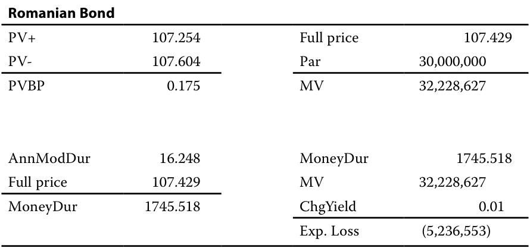
Chú thích hình ảnh – Trái phiếu Romania (Romanian Bond):
Chỉ tiêu Giá trị Chỉ tiêu Giá trị PV+ 107.254 Giá toàn phần (Full price) 107.429 PV- 107.604 Mệnh giá (Par) 30,000,000 PVBP 0.175 MV 32,228,627 AnnModDur 16.248 MoneyDur 1745.518 Giá toàn phần (Full price) 107.429 MV 32,228,627 MoneyDur 1745.518 Thay đổi lợi suất (ChgYield) 0.01 Khoản lỗ kỳ vọng (Exp. Loss) (5,236,553)
- If the client believes that interest rates will rise in the future, with all else held constant, which bond investment would most likely perform best? Solution:
- Nếu khách hàng tin rằng lãi suất sẽ tăng trong tương lai, với tất cả các yếu tố khác không đổi, khoản đầu tư trái phiếu nào nhiều khả năng nhất sẽ hoạt động tốt nhất?
The Australian bond would perform best. Since it has the lowest duration and PVBP, the expected loss on the investment from an increase in its yield is lower than the BRWA and Romanian bonds. The expected loss from a 100 bp increase in yield on the BRWA bond, for example, is almost six times that for the Australian bond (USD219,490 versus USD1.3 million).
Lời giải:
4
Trái phiếu Úc sẽ hoạt động tốt nhất. Vì nó có thời lượng và PVBP thấp nhất, khoản lỗ kỳ vọng đối với khoản đầu tư khi lợi suất tăng sẽ thấp hơn so với trái phiếu BRWA và Romania. Khoản lỗ kỳ vọng khi lợi suất tăng 100 bp đối với trái phiếu BRWA, chẳng hạn, gần gấp sáu lần so với trái phiếu Úc (219,490 USD so với 1.3 triệu USD).
4
PROPERTIES OF DURATION
CÁC ĐẶC TÍNH CỦA THỜI LƯỢNG (PROPERTIES OF DURATION)
explain how a bond’s maturity, coupon, and yield level affect its interest rate risk
- giải thích cách thức kỳ hạn (maturity), lãi suất coupon (coupon) và mức lợi suất (yield level) của trái phiếu ảnh hưởng đến rủi ro lãi suất (interest rate risk) của nó
The Macaulay and modified yield duration statistics for a traditional fixed-rate bond are primarily functions of the bond’s features: its time-to-maturity, its coupon rate, its yield-to-maturity, and the fraction of the current coupon period that has elapsed. The closed-form formula for Macaulay duration, presented in a prior lesson and again here, is useful in demonstrating the characteristics of duration (the same characteristics hold for modified duration, money duration, and price value of basis point).
Các số liệu thống kê thời lượng lợi suất Macaulay và điều chỉnh đối với một trái phiếu lãi suất cố định truyền thống chủ yếu là các hàm số phụ thuộc vào các đặc điểm của trái phiếu: thời gian đáo hạn (time-to-maturity), lãi suất coupon (coupon rate), lợi suất đáo hạn (yield-to-maturity), và phần kỳ coupon hiện tại đã trôi qua (fraction of the current coupon period that has elapsed). Công thức dạng đóng (closed-form formula) cho thời lượng Macaulay, đã được trình bày trong một bài học trước và nhắc lại tại đây, rất hữu ích trong việc chứng minh các đặc điểm của thời lượng (các đặc điểm tương tự cũng đúng đối với thời lượng điều chỉnh, thời lượng tiền tệ và giá trị giá của một điểm cơ bản).
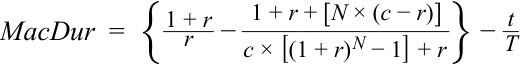
The relationship between a bond’s duration and its features ( r , c , N , and t / T ) are summarized in Exhibit 4.
Mối quan hệ giữa thời lượng của trái phiếu và các đặc điểm của nó ($r$, $c$, $N$, và $t / T$) được tóm tắt trong Bảng 4.
Exhibit 4: Properties of Yield Duration Statistics
Bảng 4: Các Đặc tính của Số liệu Thống kê Thời lượng Lợi suất (Exhibit 4: Properties of Yield Duration Statistics)
| Effect on duration (interest rate risk) from an | |
|---|---|
| increase in feature | |
| Coupon rate,c | ↓(Inverse relationship) |
| Yield to maturity,r | ↓(Inverse relationship) |
| Đặc điểm | Tác động lên thời lượng (rủi ro lãi suất) từ sự gia tăng của đặc điểm (Effect on duration from an increase in feature) |
|---|---|
| Lãi suất coupon (Coupon rate), $c$ | $\downarrow$ (Mối quan hệ nghịch biến – Inverse relationship) |
| Lợi suất đáo hạn (Yield to maturity), $r$ | $\downarrow$ (Mối quan hệ nghịch biến – Inverse relationship) |
| Effect on duration (interest rate risk) from an increase in feature |
|
|---|---|
| Time-to-maturity,T | ↑(Direct relationship) |
| Fraction of current coupon period that | ↓(Inverse relationship) |
| has elapsed,t/T |
| Đặc điểm | Tác động lên thời lượng (rủi ro lãi suất) từ sự gia tăng của đặc điểm (Effect on duration from an increase in feature) |
|---|---|
| Thời gian đáo hạn (Time-to-maturity), $T$ | $\uparrow$ (Mối quan hệ đồng biến – Direct relationship) |
| Phần kỳ coupon hiện tại đã trôi qua (Fraction of current coupon period that has elapsed), $t/T$ | $\downarrow$ (Mối quan hệ nghịch biến – Inverse relationship) |
Exhibit 5 illustrates the relationships between Macaulay duration and time-to-maturity for premium, discount, zero-coupon, and perpetual bonds (the same characteristics hold for modified duration, money duration, and price value of basis point).
Bảng 5 minh họa mối quan hệ giữa thời lượng Macaulay và thời gian đáo hạn đối với trái phiếu có giá cao hơn mệnh giá (premium), trái phiếu chiết khấu (discount), trái phiếu không trả lãi định kỳ (zero-coupon), và trái phiếu vĩnh cửu (perpetual) (các đặc điểm tương tự cũng đúng đối với thời lượng điều chỉnh, thời lượng tiền tệ và giá trị giá của một điểm cơ bản).
Exhibit 5: Properties of Macaulay Duration
Bảng 5: Các Đặc tính của Thời lượng Macaulay (Exhibit 5: Properties of Macaulay Duration)
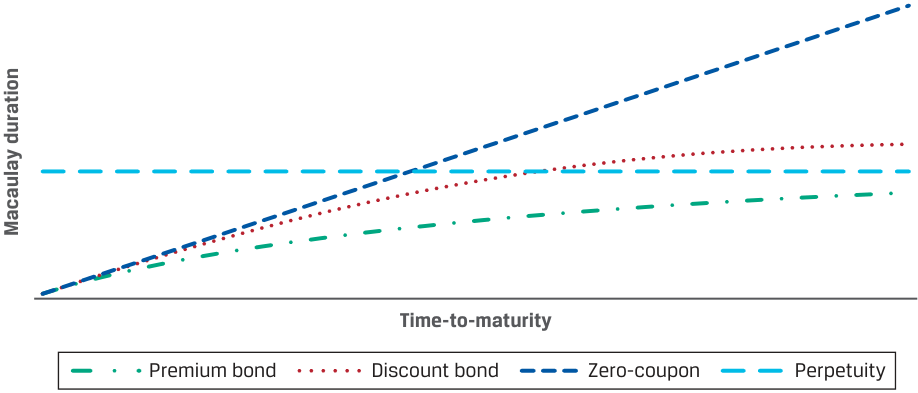
Chú thích hình ảnh: - Trục tung: Thời lượng Macaulay (Macaulay duration). - Trục hoành: Thời gian đáo hạn (Time-to-maturity). - Các đường biểu diễn: Trái phiếu không trả lãi định kỳ (Zero-coupon – đường thẳng chéo góc $45^\circ$), Trái phiếu vĩnh cửu (Perpetuity – đường tiệm cận ngang tại $(1 + r)/r$), Trái phiếu có giá cao hơn mệnh giá (Premium bond – tăng dần và tiệm cận mức $(1 + r)/r$ từ phía dưới), và Trái phiếu chiết khấu (Discount bond – vượt qua mức $(1 + r)/r$, đạt cực đại rồi giảm dần về đường tiệm cận $(1 + r)/r$).
All else being equal,
Khi các yếu tố khác không đổi (all else being equal),
- a lower-coupon bond has a higher duration and more interest rate risk than a higher-coupon bond.
- trái phiếu có lãi suất coupon thấp hơn sẽ có thời lượng cao hơn và rủi ro lãi suất lớn hơn so với trái phiếu có lãi suất coupon cao hơn.
The same pattern holds for the yield-to-maturity, so,
Mô hình tương tự cũng đúng đối với lợi suất đáo hạn, do đó,
- a lower yield-to-maturity increases the weighted average of the time to receipt of cash flow and thus increases duration .
- lợi suất đáo hạn thấp hơn làm tăng mức trung bình có trọng số của thời gian nhận dòng tiền và do đó làm tăng thời lượng.
The reason is that lower coupons and lower yields increase the weight of the maturity value or final cash flow and reduce the weight of nearer-term cash flows in the bond price.
Lý do là lãi suất coupon thấp hơn và lợi suất thấp hơn làm tăng trọng số của giá trị đáo hạn hay dòng tiền cuối cùng và làm giảm trọng số của các dòng tiền ngắn hạn hơn trong giá trái phiếu.
- Longer times-to-maturity typically correspond to higher duration .
- Thời gian đáo hạn dài hơn thường tương ứng với thời lượng cao hơn.
This pattern always holds for bonds trading at par or at a premium. In the closed-form formula, the second expression within brackets is positive for premium and par bonds, because the coupon rate ( c ) is greater than or equal to the yield-to-maturity ( r ), so ( c – r ) ≥ 0, whereas the denominator is always positive. Therefore, the Macaulay duration is always less than (1 + r )/ r , and it approaches that threshold from below as the time-to-maturity increases.
Mô hình này luôn đúng đối với các trái phiếu giao dịch ngang mệnh giá (at par) hoặc cao hơn mệnh giá (at a premium). Trong công thức dạng đóng, biểu thức thứ hai trong ngoặc nhọn mang dấu dương đối với trái phiếu có giá cao hơn mệnh giá và ngang mệnh giá, bởi vì lãi suất coupon ($c$) lớn hơn hoặc bằng lợi suất đáo hạn ($r$), nên $(c - r) \ge 0$, trong khi mẫu số luôn dương. Do đó, thời lượng Macaulay luôn nhỏ hơn $(1 + r)/r$, và nó tiệm cận ngưỡng đó từ phía dưới khi thời gian đáo hạn tăng lên.
A curious result is illustrated in Exhibit 5 for discount bonds : at some point, when the time-to-maturity is high enough, the Macaulay duration will exceed (1 + r )/ r , reach a maximum, and then decrease. This pattern develops when the number of periods ( N ) is large and the coupon rate is below the yield-to-maturity, so ( c – r ) < 0. Then, the numerator of the second expression within braces can become negative. The implication is that for long-dated bonds trading at a discount to par, interest rate risk could be lower than that of a shorter-term bond.
Một kết quả khá thú vị được minh họa trong Bảng 5 đối với trái phiếu chiết khấu (discount bonds): tại một thời điểm nào đó, khi thời gian đáo hạn đủ dài, thời lượng Macaulay sẽ vượt quá $(1 + r)/r$, đạt mức tối đa, và sau đó giảm xuống. Mô hình này xuất hiện khi số kỳ ($N$) lớn và lãi suất coupon thấp hơn lợi suất đáo hạn, tức là $(c - r) < 0$. Khi đó, tử số của biểu thức thứ hai trong ngoặc nhọn có thể trở thành số âm. Hàm ý ở đây là đối với các trái phiếu kỳ hạn dài giao dịch ở mức chiết khấu so với mệnh giá, rủi ro lãi suất có thể thấp hơn so với một trái phiếu có kỳ hạn ngắn hơn.
For a constant yield-to-maturity ( r ), the expression in braces in the closed-form formula is unchanged as time passes during the period . Therefore, the Macaulay duration decreases smoothly as time passes and then jumps upward after the coupon is paid, which creates a “saw-tooth” pattern. This pattern for the BRWA bond with a constant yield-to-maturity is illustrated in Exhibit 6. As time passes, the Macaulay duration decreases smoothly but jumps upward by a small amount on coupon dates.
Với mức lợi suất đáo hạn ($r$) không đổi, biểu thức trong ngoặc nhọn của công thức dạng đóng không thay đổi khi thời gian trôi qua trong kỳ. Do đó, thời lượng Macaulay giảm dần một cách trơn tru khi thời gian trôi qua và sau đó bật tăng lên sau khi khoản coupon được thanh toán, tạo ra hình dạng “răng cưa” (saw-tooth pattern). Mô hình này đối với trái phiếu BRWA có lợi suất đáo hạn không đổi được minh họa trong Bảng 6. Khi thời gian trôi qua, thời lượng Macaulay giảm dần một cách trơn tru nhưng bật tăng lên một lượng nhỏ vào các ngày trả coupon.
Exhibit 6: Macaulay Duration between Coupon Payments with Constant Yield-to-Maturity for the BRWA 3.2% Bond
Bảng 6: Thời lượng Macaulay giữa Các Kỳ Thanh toán Coupon với Lợi suất Đáo hạn Không đổi đối với Trái phiếu BRWA 3.2% (Exhibit 6: Macaulay Duration between Coupon Payments with Constant Yield-to-Maturity for the BRWA 3.2% Bond)
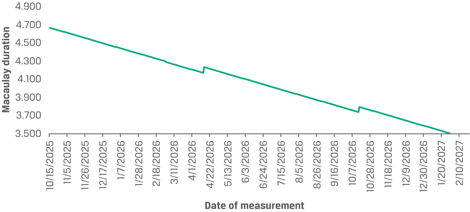
Chú thích hình ảnh: - Trục tung: Thời lượng Macaulay (Macaulay duration) từ 3.500 đến 4.900. - Trục hoành: Ngày đo lường (Date of measurement) từ 10/15/2025 đến 2/10/2027, thể hiện hình răng cưa giảm dần rồi nhảy bậc nhẹ tại các ngày trả coupon bán niên (15/04/2026 và 15/10/2026).
QUESTION SET
BỘ CÂU HỎI (QUESTION SET)
- For each pair of bonds, indicate the bond that most likely has greater interest rate risk:
- Đối với mỗi cặp trái phiếu, hãy chỉ ra trái phiếu nào nhiều khả năng nhất có rủi ro lãi suất lớn hơn:
| First bond | Second bond | Which has greater interest rate risk? |
|---|---|---|
| 5% coupon, paid semian- nually, and five years to maturity, priced to yield 6% |
||
| 4% coupon, paid semian- nually, and five years to |
4% coupon, paid semi- annually, and six years to maturity, priced to yield 6% |
|
| i maturity, priced to yield 6% |
5% coupon, paid semian- nually, and five years to maturity, priced to yield 8% |
|
| 4% coupon, paid semian- nually, and five years to maturity, priced to yield 8% |
| Trái phiếu thứ nhất (First bond) | Trái phiếu thứ hai (Second bond) | Trái phiếu nào có rủi ro lãi suất lớn hơn? (Which has greater interest rate risk?) |
|---|---|---|
| Coupon 4%, trả bán niên, và 5 năm đến khi đáo hạn, được định giá để đạt lợi suất 6% | Coupon 5%, trả bán niên, và 5 năm đến khi đáo hạn, được định giá để đạt lợi suất 6% | |
| Coupon 4%, trả bán niên, và 5 năm đến khi đáo hạn, được định giá để đạt lợi suất 6% | Coupon 4%, trả bán niên, và 6 năm đến khi đáo hạn, được định giá để đạt lợi suất 6% | |
| Coupon 4%, trả bán niên, và 5 năm đến khi đáo hạn, được định giá để đạt lợi suất 6% | Coupon 5%, trả bán niên, và 5 năm đến khi đáo hạn, được định giá để đạt lợi suất 8% | |
| Coupon 4%, trả bán niên, và 5 năm đến khi đáo hạn, được định giá để đạt lợi suất 6% | Coupon 4%, trả bán niên, và 5 năm đến khi đáo hạn, được định giá để đạt lợi suất 8% |
Solution:
Lời giải:
| First bond | Second bond | Which has greater interest rate risk? |
|---|---|---|
| 5% coupon, paid semian- nually, and five years to maturity, priced to yield 6% |
First bond | |
| 4% coupon, paid semian- nually, and five years to |
4% coupon, paid semi- annually, and six years to maturity, priced to yield 6% |
Second bond |
| i maturity, priced to yield 6% |
5% coupon, paid semian- nually, and five years to maturity, priced to yield 8% |
First bond |
| 4% coupon, paid semian- nually, and five years to maturity, priced to yield 8% |
First bond |
| Trái phiếu thứ nhất (First bond) | Trái phiếu thứ hai (Second bond) | Trái phiếu nào có rủi ro lãi suất lớn hơn? (Which has greater interest rate risk?) |
|---|---|---|
| Coupon 4%, trả bán niên, và 5 năm đến khi đáo hạn, được định giá để đạt lợi suất 6% | Coupon 5%, trả bán niên, và 5 năm đến khi đáo hạn, được định giá để đạt lợi suất 6% | Trái phiếu thứ nhất (First bond) |
| Coupon 4%, trả bán niên, và 5 năm đến khi đáo hạn, được định giá để đạt lợi suất 6% | Coupon 4%, trả bán niên, và 6 năm đến khi đáo hạn, được định giá để đạt lợi suất 6% | Trái phiếu thứ hai (Second bond) |
| Coupon 4%, trả bán niên, và 5 năm đến khi đáo hạn, được định giá để đạt lợi suất 6% | Coupon 5%, trả bán niên, và 5 năm đến khi đáo hạn, được định giá để đạt lợi suất 8% | Trái phiếu thứ nhất (First bond) |
| Coupon 4%, trả bán niên, và 5 năm đến khi đáo hạn, được định giá để đạt lợi suất 6% | Coupon 4%, trả bán niên, và 5 năm đến khi đáo hạn, được định giá để đạt lợi suất 8% | Trái phiếu thứ nhất (First bond) |
- A bond analyst is comparing Bond D, a perpetual bond with a coupon of 5%, with Bond E, a zero-coupon bond maturing in five years. If both bonds are priced to yield 6%, Bond D has:
-
A. lower interest rate risk.
-
B. the same interest rate risk.
-
C. higher interest rate risk.
-
Solution:
- Một chuyên viên phân tích trái phiếu đang so sánh Trái phiếu D, một trái phiếu vĩnh cửu có lãi suất coupon 5%, với Trái phiếu E, một trái phiếu không trả lãi định kỳ đáo hạn sau 5 năm. Nếu cả hai trái phiếu đều được định giá để đạt lợi suất 6%, Trái phiếu D có:
-
A. rủi ro lãi suất thấp hơn.
-
B. rủi ro lãi suất bằng nhau.
-
C. rủi ro lãi suất cao hơn.
-
Lời giải:
C is correct. The Macaulay duration for Bond D is 1.06/0.06 = 17.667. The Macaulay duration for Bond E is five years. The perpetual bond, Bond D, has higher interest rate risk.
C là đáp án đúng. Thời lượng Macaulay đối với Trái phiếu D là $1.06/0.06 = 17.667$. Thời lượng Macaulay đối với Trái phiếu E là 5 năm. Trái phiếu vĩnh cửu, Trái phiếu D, có rủi ro lãi suất cao hơn.
- The graph depicts the price–yield relationships for three bonds, Bond X, Bond Y, and Bond Z. The three bonds have the same coupon rate, 5%.
- Đồ thị dưới đây mô tả mối quan hệ giá – lợi suất cho ba trái phiếu: Trái phiếu X, Trái phiếu Y và Trái phiếu Z. Cả ba trái phiếu đều có cùng mức lãi suất coupon là 5%.
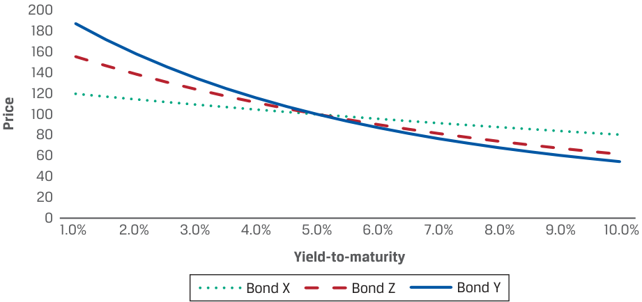
Chú thích hình ảnh: - Trục tung: Giá (Price) từ 0 đến 200. - Trục hoành: Lợi suất đáo hạn (Yield-to-maturity) từ 1.0% đến 10.0%. - Các đường biểu diễn: Trái phiếu Y (Bond Y – dốc nhất), Trái phiếu Z (Bond Z – độ dốc trung bình), và Trái phiếu X (Bond X – thoải nhất); cả ba đường cắt nhau tại mức giá 100 khi lợi suất bằng 5.0%.
Which of the three bonds most likely has the longest time to maturity?
A. Bond X
Trong số ba trái phiếu, trái phiếu nào nhiều khả năng nhất có thời gian đáo hạn dài nhất?
- B. Bond Y
-
A. Trái phiếu X
-
B. Trái phiếu Y
C. Bond Z Solution:
-
C. Trái phiếu Z
-
Lời giải:
B is correct. Bond Y has the steepest price-yield line, indicating that it has the greatest modified duration and, most likely, the longest time-to-maturity.
B là đáp án đúng. Trái phiếu Y có đường giá – lợi suất dốc nhất, cho thấy nó có thời lượng điều chỉnh lớn nhất và nhiều khả năng nhất là có thời gian đáo hạn dài nhất.
- Between coupon payments, if the yield-to-maturity does not change, the Macaulay duration of a bond:
-
A. decreases throughout the coupon period.
-
B. is constant throughout the coupon period.
-
C. increases throughout the coupon period.
-
Solution:
- Giữa các kỳ thanh toán coupon, nếu lợi suất đáo hạn không thay đổi, thời lượng Macaulay của một trái phiếu:
-
A. giảm trong suốt kỳ coupon.
-
B. không đổi trong suốt kỳ coupon.
-
C. tăng trong suốt kỳ coupon.
-
Lời giải:
A is correct. During the coupon period, the Macaulay duration declines smoothly until the next coupon period, at which time it jumps. This is illustrated in Exhibit 6.
A là đáp án đúng. Trong suốt kỳ coupon, thời lượng Macaulay giảm dần một cách trơn tru cho đến kỳ coupon tiếp theo, tại thời điểm đó nó sẽ bật tăng lên. Điều này được minh họa trong Bảng 6.
- Two bonds have the same time-to-maturity and yield-to-maturity, but one is trading at a premium to par and the other at a discount. The Macaulay duration for the premium bond is most likely ___ that of the discount bond.
-
A. lower than
-
B. the same as
-
C. higher than
-
Solution:
- Hai trái phiếu có cùng thời gian đáo hạn và lợi suất đáo hạn, nhưng một trái phiếu đang giao dịch ở mức giá cao hơn mệnh giá (at a premium to par) và trái phiếu kia giao dịch ở mức giá chiết khấu (at a discount). Thời lượng Macaulay của trái phiếu có giá cao hơn mệnh giá nhiều khả năng nhất là ___ so với thời lượng Macaulay của trái phiếu chiết khấu.
-
A. thấp hơn
-
B. bằng với
-
C. cao hơn
-
Lời giải:
A is correct. If two bonds have the same maturity and the same yield-to-maturity but one trades at a premium and one trades at a discount to par, the premium bond must have a higher coupon rate. Therefore, the premium bond has the lower Macaulay duration.
A là đáp án đúng. Nếu hai trái phiếu có cùng kỳ hạn và cùng lợi suất đáo hạn nhưng một trái phiếu giao dịch ở mức giá cao hơn mệnh giá và một trái phiếu giao dịch ở mức chiết khấu so với mệnh giá, thì trái phiếu có giá cao hơn mệnh giá phải có lãi suất coupon cao hơn. Do đó, trái phiếu có giá cao hơn mệnh giá sẽ có thời lượng Macaulay thấp hơn.
~~PRACTICE PROBLEMS~~
BÀI TẬP THỰC HÀNH (PRACTICE PROBLEMS)
1. True or false: Curve duration is a type of yield duration.
1. Đúng hay sai: Thời lượng đường cong (Curve duration) là một loại thời lượng lợi suất (yield duration).
-
A. True
-
B. False
-
A. Đúng (True)
-
B. Sai (False)
The following information relates to questions 2-7
Thông tin sau đây liên quan đến các câu hỏi 2–7
A portfolio manager is assessing the interest rate risk of three bonds as she considers making an investment of USD50 million. All three bonds are issued on 1 June 2026 and mature on 1 June 2030, and they have the following characteristics:
Một nhà quản lý danh mục đầu tư đang đánh giá rủi ro lãi suất của ba trái phiếu khi cô cân nhắc thực hiện một khoản đầu tư trị giá 50 triệu USD. Cả ba trái phiếu đều được phát hành vào ngày 1 tháng 6 năm 2026 và đáo hạn vào ngày 1 tháng 6 năm 2030, và chúng có các đặc điểm sau:
| Characteristic | Bond One | Bond Two | Bond Three |
|---|---|---|---|
| Coupon (semiannual) | 7% | 3% | 5% |
| Yield-to-maturity | 3% | 7% | 5% |
| Đặc điểm (Characteristic) | Trái phiếu Một (Bond One) | Trái phiếu Hai (Bond Two) | Trái phiếu Ba (Bond Three) |
|---|---|---|---|
| Lãi suất coupon (bán niên) (Coupon - semiannual) | 7% | 3% | 5% |
| Lợi suất đáo hạn (Yield-to-maturity) | 3% | 7% | 5% |
2. The Macaulay duration, in years, for Bond One is closest to:
2. Thời lượng Macaulay, tính bằng năm, đối với Trái phiếu Một gần nhất với:
-
A. 3.54.
-
B. 3.59.
-
C. 3.78.
-
A. 3.54.
-
B. 3.59.
-
C. 3.78.
3. The modified duration for Bond Two is closest to:
A. 3.59.
3. Thời lượng điều chỉnh đối với Trái phiếu Hai gần nhất với:
B. 3.65.
-
A. 3.59.
-
B. 3.65.
-
C. 3.78.
C. 3.78
4. So với một trái phiếu không trả lãi định kỳ kỳ hạn 5 năm được định giá để đạt lợi suất 5%, Trái phiếu Ba có thời lượng điều chỉnh được mô tả đúng nhất là:
4. Relative to a five-year zero-coupon bond priced to yield 5%, Bond Three has a modified duration that is best described as:
-
A. lower than the zero-coupon bond’s modified duration.
-
B. the same as the zero-coupon bond’s modified duration.
-
C. greater than the zero-coupon bond’s modified duration.
-
A. thấp hơn thời lượng điều chỉnh của trái phiếu không trả lãi định kỳ.
-
B. bằng với thời lượng điều chỉnh của trái phiếu không trả lãi định kỳ.
-
C. lớn hơn thời lượng điều chỉnh của trái phiếu không trả lãi định kỳ.
5. If the yields-to-maturity for all three bonds were to increase by 100 bps, which bond has the greatest anticipated decrease in price?
5. Nếu lợi suất đáo hạn của cả ba trái phiếu đều tăng 100 bps, trái phiếu nào có mức giảm giá dự kiến lớn nhất?
-
A. Bond One
-
B. Bond Two
-
C. Bond Three
-
A. Trái phiếu Một (Bond One)
-
B. Trái phiếu Hai (Bond Two)
-
C. Trái phiếu Ba (Bond Three)
6. Which bond has the highest price value of a basis point?
6. Trái phiếu nào có giá trị giá của một điểm cơ bản (price value of a basis point – PVBP) cao nhất?
-
A. Bond One
-
B. Bond Two
-
C. Bond Three
-
A. Trái phiếu Một (Bond One)
-
B. Trái phiếu Hai (Bond Two)
-
C. Trái phiếu Ba (Bond Three)
7. The portfolio manager is interested in comparing the interest rate risk of Bond Three to that of Bond Four, a floating-rate note that resets every six months. On 1 June 2026, both bonds were priced to yield 5%. If the yield changes from 5% to 5.25% halfway through the first coupon period, which bond has the greater Macaulay duration?
7. Nhà quản lý danh mục đầu tư quan tâm đến việc so sánh rủi ro lãi suất của Trái phiếu Ba với rủi ro lãi suất của Trái phiếu Bốn, một trái phiếu lãi suất thả nổi được đặt lại lãi suất mỗi sáu tháng. Vào ngày 1 tháng 6 năm 2026, cả hai trái phiếu đều được định giá để đạt lợi suất 5%. Nếu lợi suất thay đổi từ 5% lên 5.25% vào giữa kỳ coupon đầu tiên, trái phiếu nào có thời lượng Macaulay lớn hơn?
-
A. Bond Three
-
B. Bond Four
-
C. Neither: The Macaulay duration is the same for both bonds.
-
A. Trái phiếu Ba (Bond Three)
-
B. Trái phiếu Bốn (Bond Four)
-
C. Không trái phiếu nào: Thời lượng Macaulay của cả hai trái phiếu là như nhau.
~~SOLUTIONS~~
LỜI GIẢI (SOLUTIONS)
- B is correct. The Macaulay, modified, and money duration measures, as well as the price value of a basis point, are all types of yield duration. The curve duration is not classified as a type of yield duration.
- B là đáp án đúng. Các thước đo thời lượng Macaulay, thời lượng điều chỉnh và thời lượng tiền tệ, cũng như giá trị giá của một điểm cơ bản, đều là các loại thời lượng lợi suất (yield duration). Thời lượng đường cong (curve duration) không được phân loại là một dạng thời lượng lợi suất.
2. B is correct.
2. B là đáp án đúng.
| Period | Time to receipt |
Cash flow |
Present value | Weight | Time to receipt × weight |
|---|---|---|---|---|---|
| 1 | 1.0000 | 3.5 | 3.44828 | 0.02999 | 0.02999 |
| 2 | 2.0000 | 3.5 | 3.39732 | 0.02955 | 0.05910 |
| 3 | 3.0000 | 3.5 | 3.34711 | 0.02911 | 0.08734 |
| 4 | 4.0000 | 3.5 | 3.29764 | 0.02868 | 0.11473 |
| 5 | 5.0000 | 3.5 | 3.24891 | 0.02826 | 0.14129 |
| 6 | 6.0000 | 3.5 | 3.20090 | 0.02784 | 0.16704 |
| 7 | 7.0000 | 3.5 | 3.15359 | 0.02743 | 0.19200 |
| 8 | 8.0000 | 103.5 | 91.87810 | 0.79914 | 6.39308 |
| 114.97185 | 1.00000 | 7.18458 | |||
| Annualized | Macaulay dura | tion | 3.59229 |
| Kỳ (Period) | Thời gian nhận (Time to receipt) | Dòng tiền (Cash flow) | Giá trị hiện tại (Present value) | Trọng số (Weight) | Thời gian nhận × trọng số (Time to receipt × weight) |
|---|---|---|---|---|---|
| 1 | 1.0000 | 3.5 | 3.44828 | 0.02999 | 0.02999 |
| 2 | 2.0000 | 3.5 | 3.39732 | 0.02955 | 0.05910 |
| 3 | 3.0000 | 3.5 | 3.34711 | 0.02911 | 0.08734 |
| 4 | 4.0000 | 3.5 | 3.29764 | 0.02868 | 0.11473 |
| 5 | 5.0000 | 3.5 | 3.24891 | 0.02826 | 0.14129 |
| 6 | 6.0000 | 3.5 | 3.20090 | 0.02784 | 0.16704 |
| 7 | 7.0000 | 3.5 | 3.15359 | 0.02743 | 0.19200 |
| 8 | 8.0000 | 103.5 | 91.87810 | 0.79914 | 6.39308 |
| 114.97185 | 1.00000 | 7.18458 | |||
| Thời lượng Macaulay năm hóa (Annualized Macaulay duration) | 3.59229 |
3. B is correct.
3. B là đáp án đúng.
| Period | Time to receipt |
Cash flow |
Present value | Weight | Time to receipt × weight |
|---|---|---|---|---|---|
| 1 | 1.0000 | 1.5 | 1.44928 | 0.01680 | 0.01680 |
| 2 | 2.0000 | 1.5 | 1.40027 | 0.01623 | 0.03247 |
| 3 | 3.0000 | 1.5 | 1.35291 | 0.01569 | 0.04706 |
| 4 | 4.0000 | 1.5 | 1.30716 | 0.01516 | 0.06062 |
| 5 | 5.0000 | 1.5 | 1.26296 | 0.01464 | 0.07321 |
| 6 | 6.0000 | 1.5 | 1.22025 | 0.01415 | 0.08488 |
| 7 | 7.0000 | 1.5 | 1.17899 | 0.01367 | 0.09568 |
| 8 | 8.0000 | 101.5 | 77.08027 | 0.89366 | 7.14930 |
| 86.25209 | 1.00000 | 7.56003 | |||
| Annualized | Macaulay dur | ation | 3.780016 | ||
| Modified d | i uration | 3.652190 |
| Kỳ (Period) | Thời gian nhận (Time to receipt) | Dòng tiền (Cash flow) | Giá trị hiện tại (Present value) | Trọng số (Weight) | Thời gian nhận × trọng số (Time to receipt × weight) |
|---|---|---|---|---|---|
| 1 | 1.0000 | 1.5 | 1.44928 | 0.01680 | 0.01680 |
| 2 | 2.0000 | 1.5 | 1.40027 | 0.01623 | 0.03247 |
| 3 | 3.0000 | 1.5 | 1.35291 | 0.01569 | 0.04706 |
| 4 | 4.0000 | 1.5 | 1.30716 | 0.01516 | 0.06062 |
| 5 | 5.0000 | 1.5 | 1.26296 | 0.01464 | 0.07321 |
| 6 | 6.0000 | 1.5 | 1.22025 | 0.01415 | 0.08488 |
| 7 | 7.0000 | 1.5 | 1.17899 | 0.01367 | 0.09568 |
| 8 | 8.0000 | 101.5 | 77.08027 | 0.89366 | 7.14930 |
| 86.25209 | 1.00000 | 7.56003 | |||
| Thời lượng Macaulay năm hóa (Annualized Macaulay duration) | 3.780016 | ||||
| Thời lượng điều chỉnh (Modified duration) | 3.652190 |
- A is correct. No calculation is necessary, as we know that a five-year zero-coupon bond has a Macaulay duration of 5, which is greater than that of a coupon bond like Bond three. Since they have the same yields, the bond’s modified durations will have the same relationship as their Macaulay duration. Alternatively, we can calculate Bond Three’s modified duration of 3.585:
- A là đáp án đúng. Không cần tính toán, vì chúng ta biết rằng một trái phiếu không trả lãi định kỳ kỳ hạn 5 năm có thời lượng Macaulay là 5, lớn hơn so với thời lượng của một trái phiếu trả lãi định kỳ như Trái phiếu Ba. Vì chúng có cùng mức lợi suất, thời lượng điều chỉnh của hai trái phiếu sẽ có cùng mối quan hệ như thời lượng Macaulay của chúng. Ngoài ra, chúng ta có thể tính thời lượng điều chỉnh của Trái phiếu Ba là 3.585:
| Period | Time to receipt |
Cash flow |
Present value Weight |
Time to receipt × weight |
|---|---|---|---|---|
| 1 | 1.0000 | 2.5 | 2.43902 0.02439 |
0.02439 |
| 2 | 2.0000 | 2.5 | 2.37954 0.02380 |
0.04759 |
| 3 | 3.0000 | 2.5 | 2.32150 0.02321 |
0.06964 |
| 4 | 4.0000 | 2.5 | 2.26488 0.02265 |
0.09060 |
| 5 | 5.0000 | 2.5 | 2.20964 0.02210 |
0.11048 |
| 6 | 6.0000 | 2.5 | 2.15574 0.02156 |
0.12934 |
| 7 | 7.0000 | 2.5 | 2.10316 0.02103 |
0.14722 |
| 8 | 8.0000 | 102.5 | 84.12652 0.84127 |
6.73012 |
| 100.00000 1.00000 |
7.34939 | |||
| Annualized Macaulay duration | 3.6747 | |||
| Modified duration | 3.5851 |
| Kỳ (Period) | Thời gian nhận (Time to receipt) | Dòng tiền (Cash flow) | Giá trị hiện tại (Present value) | Trọng số (Weight) | Thời gian nhận × trọng số (Time to receipt × weight) |
|---|---|---|---|---|---|
| 1 | 1.0000 | 2.5 | 2.43902 | 0.02439 | 0.02439 |
| 2 | 2.0000 | 2.5 | 2.37954 | 0.02380 | 0.04759 |
| 3 | 3.0000 | 2.5 | 2.32150 | 0.02321 | 0.06964 |
| 4 | 4.0000 | 2.5 | 2.26488 | 0.02265 | 0.09060 |
| 5 | 5.0000 | 2.5 | 2.20964 | 0.02210 | 0.11048 |
| 6 | 6.0000 | 2.5 | 2.15574 | 0.02156 | 0.12934 |
| 7 | 7.0000 | 2.5 | 2.10316 | 0.02103 | 0.14722 |
| 8 | 8.0000 | 102.5 | 84.12652 | 0.84127 | 6.73012 |
| 100.00000 | 1.00000 | 7.34939 | |||
| Thời lượng Macaulay năm hóa (Annualized Macaulay duration) | 3.6747 | ||||
| Thời lượng điều chỉnh (Modified duration) | 3.5851 |
The zero-coupon’s modified duration is 5/(1 + 0.05) = 4.7619.
Thời lượng điều chỉnh của trái phiếu không trả lãi định kỳ là $5/(1 + 0.05) = 4.7619$.
5. B is correct.
5. B là đáp án đúng.
| Bond One | Bond Two | Bond Three | |
|---|---|---|---|
| Full price (percent of par) | 114.972 | 86.252 | 100.000 |
| Modified duration | 3.539 | 3.652 | 3.585 |
| Investment (in USD millions) | 50 | 50 | 50 |
| Money duration | 176.960 | 182.609 | 179.253 |
| Change in value (in USD millions) | –1.770 | –1.826 | –1.793 |
| Chỉ tiêu | Trái phiếu Một (Bond One) | Trái phiếu Hai (Bond Two) | Trái phiếu Ba (Bond Three) |
|---|---|---|---|
| Giá toàn phần (phần trăm mệnh giá) (Full price - percent of par) | 114.972 | 86.252 | 100.000 |
| Thời lượng điều chỉnh (Modified duration) | 3.539 | 3.652 | 3.585 |
| Khoản đầu tư (triệu USD) (Investment in USD millions) | 50 | 50 | 50 |
| Thời lượng tiền tệ (Money duration) | 176.960 | 182.609 | 179.253 |
| Thay đổi giá trị (triệu USD) (Change in value in USD millions) | –1.770 | –1.826 | –1.793 |
6. A is correct.
6. A là đáp án đúng.
| Bond One | Bond Two | Bond Three | |
|---|---|---|---|
| Price | 114.972 | 86.252 | 100.000 |
| Price + 1 bp | 114.931 | 86.221 | 99.964 |
| Price – 1 bp | 115.013 | 86.284 | 100.036 |
| PVBP | 0.04069 | 0.03150 | 0.03585 |
| Chỉ tiêu | Trái phiếu Một (Bond One) | Trái phiếu Hai (Bond Two) | Trái phiếu Ba (Bond Three) |
|---|---|---|---|
| Giá (Price) | 114.972 | 86.252 | 100.000 |
| Giá khi tăng 1 bp (Price + 1 bp) | 114.931 | 86.221 | 99.964 |
| Giá khi giảm 1 bp (Price – 1 bp) | 115.013 | 86.284 | 100.036 |
| PVBP | 0.04069 | 0.03150 | 0.03585 |
- A is correct. The Macaulay duration for Bond Three is 3.6747. The Macaulay duration for Bond Four is 0.5 because there is exposure to interest rate changes for one-half of the coupon period.
- A là đáp án đúng. Thời lượng Macaulay đối với Trái phiếu Ba là 3.6747. Thời lượng Macaulay đối với Trái phiếu Bốn là 0.5 bởi vì mức độ tiếp xúc với biến động lãi suất chỉ kéo dài trong một nửa kỳ coupon.